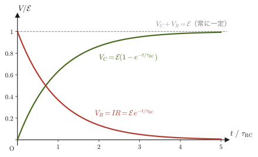
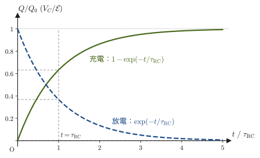

第37章定常電流と電気回路
前の2章では，電荷が止まっている状況（静電気学）を扱った．しかし，懐中電灯やスマートフォンを動かしているのは，導線の中を流れ続ける電荷——電流である．電流が流れているとき，導線の中の電荷はもはや静止していないが，ある種の「定常性」がある：導線のどの断面を見ても，単位時間あたりに通過する電気量は変わらない．この「流れているのに，どこを見ても同じ」という状態を定常電流（steady current）という．
高校物理では，$I=\dfrac{\Delta Q}{\Delta t}$，$V=RI$（オームの法則），$R=\rho\dfrac{l}{S}$，直列・並列接続の合成抵抗の公式を，与えられた公式として覚えたはずである．本章では，これらを微分積分とベクトルで書き直し，どこから来る式なのかを見る．$R=\rho l/S$ と $\sigma=ne^2\tau/m_{\mathrm e}$ は，自由電子が電場から受ける力と格子との衝突による抵抗力のつり合い（ドルーデ模型）から導かれる．これは，第7章で学んだ「速度に比例する抵抗力」と数学的に同じ構造である．一方，直列・並列の合成抵抗とキルヒホッフの法則は，電流の保存（電荷保存則）と電位の一価性から導かれる．電荷保存則そのものは，前章までに学んだ発散定理から，1つの式（連続の方程式）にまとまる．
この章を読み終えると，(1) 銅線の中の自由電子の動く速さを見積もる，(2) 複雑に入り組んだ回路の各枝の電流を連立方程式で求める，(3) RC回路の充電・放電を微分方程式で予測する，ことができるようになる．
- 電流を3通りの方法（$I=\dd Q/\dd t$，$I=envS$，電流密度 $\bm j$ の面積分）で表し，それらが同じ量を表していることの確認
- 電流密度 $\bm j=\rho\bm v$ の定義と，発散定理を使った電荷保存則（連続の方程式）$\nabla\cdot\bm j=-\pdiff{\rho}{t}$ の導出
- オームの法則 $V=RI$（と局所形 $\bm j=\sigma\bm E$）の背後にある自由電子モデル（ドルーデ模型）による抵抗 $R=\rho l/S$ の力学的な導出と，抵抗率の意味・大きさ
- ジュール熱と電力 $P=IV=I^2R=V^2/R$
- 抵抗の直列接続 $R=R_1+R_2$・並列接続 $1/R=1/R_1+1/R_2$ の導出と，任意の回路網を解くキルヒホッフの法則
- コンデンサーと抵抗を組み合わせたRC回路で，電荷が指数関数的に変化する過渡現象（充電・放電）とそのエネルギー収支
もとにしたノート：望月泰英『物理学ノート 電磁気学』 pp. 13–16．
37.1 電流の定義と電流の3通りの表し方
高校物理で「電流」は，「導線を流れる電気の勢い」というくらいの直感的なイメージで導入され，$I=\dfrac{\Delta Q}{\Delta t}$ という式が与えられたはずである．ここでは，この式がどこから来るのかも含めて，電流という量を3つの異なる見方から定義し直す．3つはすべて同じ量を表す——見る角度が違うだけである，という点を確認してほしい．
定義37.1 電流（electric current）
導体（金属線など，自由に動ける電荷を持つ物質）の断面を，1秒間に通過する電気量（電荷）の大きさを電流という．電流を $I\ [\mathrm A]$ と書く．定義から，電流の単位は電気量の単位 $\mathrm C$（クーロン）を時間の単位 $\mathrm s$（秒）で割ったものである：
$$ [\mathrm A]=\left[\frac{\mathrm C}{\mathrm s}\right],\qquad\text{すなわち}\qquad 1\ \mathrm A = 1\ \mathrm{C/s} $$である（アンペア（ampere）はSI基本単位の1つであり，実際には電流の単位の方が先に定義され，電気量 $1\ \mathrm C=1\ \mathrm{A\,s}$ が電流から導かれる単位である．しかし高校・大学初年次では，電気量の直感の方がつかみやすいので，本書では電気量を先に既知として電流を導入する）．
注意：電流の向きは「正電荷が移動する向き」と約束する
電流の向きは，正電荷が移動する向きと約束する（電子の存在が知られるより前に決められた約束である）．金属の中で実際に動いているのは負電荷をもつ自由電子なので，金属では電流の向きは電子の移動の向きと逆になる．以下の図でも，電子の矢印と電流 $I$ の矢印は互いに逆向きに描く．
37.1.1 表し方その1：瞬間の電流 $I=\dd Q/\dd t$
導体のある断面を，時間 $\Delta t\ [\mathrm s]$ の間に電気量 $\Delta Q\ [\mathrm C]$ が通過したとすると，その間の平均の電流は，定義37.1よりただちに
$$ I_{\text{平均}}=\frac{\Delta Q}{\Delta t} $$である．しかし，一般に電流は時々刻々変化しうるから，「時刻 $t$ における電流」を正確に定めるには，高校数学で学んだ平均変化率から瞬間変化率への移行と同じ手続きを踏む必要がある．つまり，$\Delta t$ をどんどん小さくしていった極限を考える：
\begin{equation} I(t)=\lim_{\Delta t\to0}\frac{\Delta Q}{\Delta t}=\frac{\dd Q}{\dd t} \label{eq:37-current-def} \end{equation}右辺は，電荷 $Q(t)$（断面をすでに通過した電気量の累積，と考えてよい）を時刻 $t$ で微分したものであり，まさに微分の定義そのものである（37.7節で見るように，この「電流＝電荷の時間微分」という関係は，コンデンサーを含む回路の微分方程式を立てるときの出発点にもなる）．式 \eqref{eq:37-current-def} が，電流の最も基本的な定義式である．
37.1.2 表し方その2：自由電子の平均速度による表現 $I=envS$
金属のような導体の中では，原子は決まった位置（格子点）にとどまっているが，各原子の最外殻の電子（自由電子，free electron）は，特定の原子に属さずに導体内部を自由に動き回れる．電池をつなぐなどして導体の両端に電位差（電圧）を与えると，この自由電子の集団全体が，電場から力を受けて，ある向きに少しずつ押し流されるように動く．この電子集団のゆっくりとした移動の平均の速さを平均速度（あるいはドリフト速度，drift velocity）といい，$v\ [\mathrm{m/s}]$ と書く．
断面積 $S\ [\mathrm m^2]$ の導線を考え，$1\ \mathrm m^3$ あたりの自由電子の個数（自由電子密度）を $n\ [\mathrm{1/m^3}]$，電気素量を $e\ [\mathrm C]$（$e=1.602\,176\,634\times10^{-19}\ \mathrm C$，電子1個が持つ電気量の大きさ）とする．図37.1のように，自由電子が平均の速さ $v$ で導線を左向きに移動している（したがって電流は右向き）としよう．
導出：$I=envS$
自由電子は平均の速さ $v\ [\mathrm{m/s}]$ で動いているから，1秒間に自由電子が進む距離はちょうど $v\ [\mathrm m]$ である（速さ×時間＝距離，という最も基本的な関係を，時間 $1\ \mathrm s$ について使っているだけである）．したがって，「今から1秒後までに断面 $S$ を通過する自由電子」とは，図37.1のように，断面から電子が来る側に距離 $v$ だけさかのぼった範囲にいる自由電子すべてであり，これらは体積
$$ vS\ [\mathrm m^3] $$の柱状の領域の中に含まれている（底面積 $S$，高さ $v$ の柱の体積は底面積×高さ）．この体積 $vS$ の中にいる自由電子の個数は，自由電子密度 $n$（$1\ \mathrm m^3$ あたりの個数）を掛けて，
$$ n\times vS = nvS\ \text{個} $$である．電子1個の電気量の大きさは電気素量 $e$ なので，この $nvS$ 個の電子が運ぶ電気量の大きさは，
$$ e\times nvS = envS\ [\mathrm C] $$である．これが「1秒間に断面を通過する電気量」そのものなので，定義37.1より，これがそのまま電流 $I$ の大きさに等しい：
\begin{equation} I=envS \label{eq:37-i-envs} \end{equation}（式 \eqref{eq:37-i-envs} は電流の大きさを表す式である．向きは，上の注意のとおり電子の移動と逆向きである．電子に限らず，電気量 $q$，数密度 $n$ の担い手が平均の速さ $v$ で動くときは，同じ議論で $I=\abs{q}nvS$ となる．）
（導出終わり）
イメージ：なぜ電子の移動はとても遅いのに，電流はほぼ瞬時に流れるのか
式 \eqref{eq:37-i-envs} から実際に金属中の自由電子の平均速度 $v$ を計算してみると（例題37.1），驚くほど小さい——1秒間に $0.1\ \mathrm{mm}$ にも満たない——ことが分かる．一方，スイッチを入れると照明はほぼ瞬時に点灯する．これは矛盾ではない．導線の中には，あらかじめびっしりと自由電子が詰まっており（ちょうど，水を満たした長いホースのようなもの），スイッチを入れて電場が生じた瞬間，導線のどの場所の電子もほぼ同時に動き出す（電場の変化が導線に沿って伝わる速さは，導線や電線の構造によって真空中の光速の数十％からほぼ100％である）．個々の電子がゆっくり移動するのと，電流という「効果」が伝わる速さはまったく別の話である——ホースの端で蛇口をひねると，ホースの反対側からほぼ瞬時に水が出てくるが，1個1個の水分子がホースの端から端まで移動したわけではないのと同じ理屈である．
また，電子1個の速さが小さくても，$I=envS$ の中の自由電子密度 $n$ が $10^{28}\ \mathrm{1/m^3}$ 程度と桁違いに大きいので，電流 $I$ そのものは大きな値になりうる．
37.1.3 表し方その3：電流密度の面積分 $I=\iint_S\bm j\cdot\bm n\,\dd S$
表し方その2は，断面積 $S$ が一定で，かつ断面のどこでも電流の密度が一様であることを暗黙に仮定していた．しかし，一般には断面積が場所によって変わったり（先が細くなった導線など），断面内で電流の集中度合いが偏っていたりする．そこで，「単位面積あたりの電流」という，より細かい量を導入する．
注意：電流密度の記号 $\bm j$ について
本書では，この「単位面積あたりの電流」を表すベクトルを $\bm j$ と書く．電流密度を $i$ と書く本も多いが，$i$ は虚数単位（第7章や交流回路で登場する）や交流の瞬時電流と紛らわしいので，本書では電流密度に $\bm j$ を使う（この約束は第V部を通じて変わらない）．ベクトルの太字表記 $\bm j$ は，第35章で導入した $\bm E,\bm D$ などと同じ約束である．
電流密度 $\bm j$ を，微小な面積 $\dd S$ を垂直に通過する電流 $\dd I$ を用いて，$\dd I=\bm j\cdot\bm n\,\dd S$（$\bm n$ は面 $\dd S$ に垂直な単位ベクトル）となるように定める．これを断面 $S$ 全体で積分（面積分，大学数学 第20章 20.5節の流束）すれば，断面 $S$ を通過する全電流が得られる：
\begin{equation} I=\iint_S\bm j\cdot\bm n\,\dd S \label{eq:37-i-flux} \end{equation}これが，電流の3番目の表し方である．$\bm j\cdot\bm n$ は，電流密度ベクトルのうち面に垂直な成分だけを取り出す操作であり（内積の定義，大学数学 第15章 15.2節），面を斜めに横切る電流は，その垂直成分しか「その面を通過した」とは数えない，という自然な要請を表している．特に，$\bm j$ が断面に垂直で断面全体で一様なときは，式 \eqref{eq:37-i-flux} は単に $I=jS$，すなわち $j=I/S$ となる．したがって電流密度の単位は $[\mathrm{A/m^2}]$ である．
次の37.2節で，この電流密度 $\bm j$ を自由電子の言葉で具体的に表し，式 \eqref{eq:37-i-envs}・式 \eqref{eq:37-i-flux} が矛盾なくつながっていることを確認する．
例題37.1 銅線の中の自由電子の平均速度
銅は，原子1個あたり1個の自由電子を放出すると考えてよいことが知られている．銅の密度は $8.96\times10^3\ \mathrm{kg/m^3}$，原子量（モル質量）は $63.55\ \mathrm{g/mol}=63.55\times10^{-3}\ \mathrm{kg/mol}$ である．アボガドロ定数 $N_{\mathrm A}=6.022\,140\,76\times10^{23}\ \mathrm{mol^{-1}}$ を用いて，まず銅の自由電子密度 $n$ を求めよ．次に，断面積 $S=1.0\ \mathrm{mm^2}=1.0\times10^{-6}\ \mathrm{m^2}$ の銅線に $I=1.0\ \mathrm A$ の電流が流れているとき，自由電子の平均速度 $v$ を求めよ．
解答 $1\ \mathrm{m^3}$ の銅に含まれる原子の個数（＝自由電子の個数，1原子あたり1個なので）は，「密度 $\div$ モル質量 $\times$ アボガドロ定数」で求まる：
$$ n=\frac{8.96\times10^{3}\ \mathrm{kg/m^3}}{63.55\times10^{-3}\ \mathrm{kg/mol}}\times6.022\,140\,76\times10^{23}\ \mathrm{mol^{-1}}\approx8.49\times10^{28}\ \mathrm{1/m^3} $$（単位の確認：$\mathrm{(kg/m^3)/(kg/mol)\times mol^{-1}=(mol/m^3)\times mol^{-1}=1/m^3}$ で正しい）．次に，式 \eqref{eq:37-i-envs}（$I=envS$）を $v$ について解くと $v=I/(enS)$ となるので，
$$ v=\frac{I}{enS}=\frac{1.0\ \mathrm A}{(1.602\times10^{-19}\ \mathrm C)\times(8.49\times10^{28}\ \mathrm{1/m^3})\times(1.0\times10^{-6}\ \mathrm{m^2})}\approx7.4\times10^{-5}\ \mathrm{m/s} $$（単位の確認：$\mathrm{A/(C\cdot(1/m^3)\cdot m^2)=A/(C/m)=(C/s)/(C/m)=m/s}$ で正しい）．$v\approx0.074\ \mathrm{mm/s}$ ——1秒間に $0.1\ \mathrm{mm}$ にも満たない速さである．37.1.2節の「イメージ」で述べたとおり，個々の電子の移動は極めて遅いが，導線中にはあらかじめ電子がぎっしり詰まっているため，スイッチを入れれば電流はほぼ瞬時に流れ始める．
例題37.2 電流密度の大きさの実感
断面積 $S=1.0\ \mathrm{mm^2}$ の銅線に $I=1.0\ \mathrm A$ の電流が一様に流れている（例題37.1と同じ状況）．(1) 電流密度の大きさ $j$ を $\mathrm{A/m^2}$ で求めよ．(2) $j$ と，例題37.1で求めた自由電子密度 $n$ から，平均速度 $v$ を $v=j/(en)$ で求め，例題37.1と一致することを確かめよ．(3) この導線を，導線の軸に垂直な面から $60^\circ$ 傾けた平面で切ったとき，切り口の面積 $S'$ と，その面を通過する電流を求めよ．
解答 (1) 電流が断面に垂直で一様なので $j=I/S$ である：
$$ j=\frac{1.0\ \mathrm A}{1.0\times10^{-6}\ \mathrm{m^2}}=1.0\times10^{6}\ \mathrm{A/m^2} $$（単位の確認：$\mathrm{A/m^2}$ で正しい．$1\ \mathrm{A/mm^2}=10^6\ \mathrm{A/m^2}$ である）．(2) $I=envS$ の両辺を $S$ で割れば $j=env$ なので，$v=j/(en)$ である：
$$ v=\frac{1.0\times10^{6}}{(1.602\times10^{-19})\times(8.49\times10^{28})}\approx7.4\times10^{-5}\ \mathrm{m/s} $$となり，例題37.1の結果と一致する．(3) 軸に垂直な断面（面積 $S$）に対して $60^\circ$ 傾けた平面の法線 $\bm n$ は，$\bm j$ と $\theta=60^\circ$ の角をなす（図37.2）．切り口の面積は $S'=S/\cos\theta=1.0\ \mathrm{mm^2}/0.50=2.0\ \mathrm{mm^2}$ であり，$\bm j\cdot\bm n=j\cos\theta=0.50\times10^{6}\ \mathrm{A/m^2}$ なので，通過する電流は
$$ I'=\iint_{S'}\bm j\cdot\bm n\,\dd S=(j\cos\theta)\,S'=(0.50\times10^{6})\times(2.0\times10^{-6})=1.0\ \mathrm A $$となって，垂直な断面と同じ $1.0\ \mathrm A$ である（電流は，どんな向きの断面で測っても，導線を貫く同じ電流である）．
37.2 電流密度と電荷保存則（連続の方程式）
37.1節で導いた $I=envS$（式 \eqref{eq:37-i-envs}）と，電流密度による表し方 $I=\iint_S\bm j\cdot\bm n\,\dd S$（式 \eqref{eq:37-i-flux}）を見比べて，電流密度 $\bm j$ を電荷を運ぶ粒子（担い手，carrier）の言葉で具体的に表そう．
導出：電流密度 $\bm j=\rho\bm v$
電荷を運ぶ担い手1個の電気量を $q$（自由電子なら $q=-e$），数密度を $n$，平均速度を $\bm v$ とする．担い手だけについての単位体積あたりの電気量（電荷密度）は $\rho=qn\ [\mathrm{C/m^3}]$ である．平らな面 $S$（単位法線ベクトル $\bm n$）を，担い手が面に垂直（$\bm v$ が $\bm n$ と同じ向き）に貫いているとしよう．時間 $\Delta t$ の間に面を $\bm n$ の向きに通り抜ける担い手は，底面積 $S$，高さ $v\Delta t$ の柱の中にいたものすべてで，$nSv\Delta t$ 個である．運ばれる電気量は $q\cdot nSv\Delta t=\rho vS\Delta t$ なので，$\bm n$ の向きに測った電流は
$$ I=\rho vS $$である（自由電子では $\rho=-en<0$ なので $I=-envS<0$ となる．これは，$\bm n$ の向き（電子が進む向き）に測ると電流が負，つまり本当の電流は電子と逆向きであることを表しており，大きさは37.1節の $envS$ と一致している）．
次に，$\bm v$ が面に斜めでも，場所によって違っていても成り立つように，微小な面積 $\dd S$ について考える．$\dd S$ を単位時間に貫く担い手は，底面積 $\dd S$，斜めの高さ（$\bm n$ 方向の高さ）$\bm v\cdot\bm n$ の柱の中の担い手なので，微小な面を通る電流は
$$ \dd I=\rho\,(\bm v\cdot\bm n)\,\dd S=(\rho\bm v)\cdot\bm n\,\dd S $$である．これを，電流密度の定義 $\dd I=\bm j\cdot\bm n\,\dd S$ と比べる．これがどんな微小面・どんな向きについても成り立つためには，
\begin{equation} \bm j=\rho\bm v \label{eq:37-current-density} \end{equation}でなければならない．
（導出終わり）
定義37.2 電荷密度と電流密度
導体内の位置ごとに定まる，単位体積あたりの電気量を電荷密度（charge density）$\rho\ [\mathrm{C/m^3}]$ という．電荷密度 $\rho$ をもつ電荷の集団が速度 $\bm v$ で運動しているときの電流密度（current density）$\bm j\ [\mathrm{A/m^2}]$ は式 \eqref{eq:37-current-density}，$\bm j=\rho\bm v$ で定まる．担い手が複数の種類あれば，それぞれの $\rho_i\bm v_i$ の和になる．金属で電流を担うのは自由電子（電荷 $-e$，数密度 $n$）なので，電荷密度は $\rho=-en$，電流密度は
$$ \bm j=-en\,\bm v $$である（大きさ $env$，向きは電子の移動の向きと逆）．電流密度の大きさに面積を掛けたものが電流になる（式 \eqref{eq:37-i-flux}）ことから，単位は $[\mathrm{A/m^2}]$ である．
注意：金属の中の「正味の電荷密度」はゼロでも，電流密度はゼロではない
金属の内部では，自由電子の電荷密度 $-en$ を，格子をつくる陽イオンの電荷密度 $+en$ がちょうど打ち消しているので，全体の電荷密度（正味の電荷密度）は $\rho=0$ である．しかし陽イオンは動かず，自由電子だけが動くので，電流密度は $\bm j=-en\bm v\neq0$ である．次の37.2.1節に現れる連続の方程式の $\rho$ は，このように陽イオンなどを含めた正味の電荷密度のことである．
ここまでで，電流の3通りの表し方——$I=\dd Q/\dd t$（式 \eqref{eq:37-current-def}），$I=envS$（式 \eqref{eq:37-i-envs}），$I=\iint_S\bm j\cdot\bm n\,\dd S$（式 \eqref{eq:37-i-flux}，$\bm j=\rho\bm v$）——がすべて矛盾なくつながっていることが確認できた．
37.2.1 電荷保存則（連続の方程式）
電流密度 $\bm j$ が定義できたので，次に「電荷は，勝手に生まれたり消えたりしない」という自然界の基本原理——電荷保存則（law of conservation of charge）——を，電流密度を使った数式で表そう．これは，第35章でクーロンの法則からガウスの法則を導いたとき（第35章 35.3節）に使ったのとまったく同じ数学的な道具——ガウスの発散定理（divergence theorem，大学数学 第20章 20.5節）——を使う，電磁気学でくり返し現れる論法の2つ目の例である．
導出：電荷保存則 $\nabla\cdot\bm j=-\pdiff{\rho}{t}$
はじめに，記号 $\nabla\cdot\bm j$（ナブラ・ドット・$\bm j$ と読む）の意味を確認しておく．これは電流密度 $\bm j=(j_x,j_y,j_z)$ の発散（divergence）とよばれ，成分で書けば
$$ \nabla\cdot\bm j\equiv\pdiff{j_x}{x}+\pdiff{j_y}{y}+\pdiff{j_z}{z} $$である．各点で電流が「湧き出している」強さを表す量である（大学数学 第19章 19.1節，19.2節）．
図37.3のように，空間内に，時間によらず固定された任意の閉曲面 $S$ を考え，それが囲む領域を $V$ とする．ある時刻 $t$ における，領域 $V$ の内部の全電荷は，電荷密度 $\rho$ を体積積分（大学数学 第7章 7.1節の重積分を3次元に広げたもの）して，
$$ Q=\iiint_V\rho\,\dd V $$と表せる．いま，この閉曲面の微小面積 $\dd S$ を通って，内側から外側へ電流密度 $\bm j$ で電荷が流れ出しているとする．表面全体から流れ出す電流の合計は，式 \eqref{eq:37-i-flux} の形の面積分（閉曲面全体にわたる面積分を $\oint_S$ と書く）$\oint_S\bm j\cdot\bm n\,\dd S$（$\bm n$ は各点で外向きの単位法線ベクトル）である．電荷が外へ流れ出れば出るほど，内部に残る電荷 $Q$ は減っていく——これは「流出量＝内部の電荷の減少率」という自然な関係であり，式で書けば，
$$ \oint_S\bm j\cdot\bm n\,\dd S=-\frac{\dd Q}{\dd t} $$となる（右辺にマイナスがつくのは，$Q$ が減少する（$\dd Q/\dd t<0$）ときに，左辺の流出量が正になるようにするためである）．ここで，ガウスの発散定理（大学数学 第20章 20.5節，あるいは第35章 35.3節でクーロンの法則から発散定理を使ってガウスの法則を導いたときとまったく同じ定理）を左辺に適用すると，
$$ \oint_S\bm j\cdot\bm n\,\dd S=\iiint_V(\nabla\cdot\bm j)\,\dd V $$である．また，右辺については，領域 $V$ は時間によらず固定されているので，時間微分を積分の中に入れることができる．このとき，$\rho$ は位置 $(x,y,z)$ と時刻 $t$ の両方の関数 $\rho(x,y,z,t)$ であり，位置を固定して時刻だけを変数として微分するので，この微分は偏微分（partial differentiation）になる．偏微分は記号 $\partial$（ラウンドディー，あるいはパーシャル）で書き，$\pdiff{\rho}{t}$ と表す（$\rho$ が $t$ 以外に $x,y,z$ にも依存することを明示するために，$\dd/\dd t$ ではなく $\partial/\partial t$ を使う）：
$$ -\frac{\dd Q}{\dd t}=-\frac{\dd}{\dd t}\iiint_V\rho\,\dd V=-\iiint_V\pdiff{\rho}{t}\,\dd V $$両辺を合わせると，
$$ \iiint_V(\nabla\cdot\bm j)\,\dd V=-\iiint_V\pdiff{\rho}{t}\,\dd V $$となる．この関係は，領域 $V$ の取り方（閉曲面 $S$ の形と大きさ）によらずに成り立たなければならない．体積積分の中身（被積分関数）どうしが，任意の領域について等しい積分を与えるためには，被積分関数自身が各点で等しくなければならない（これは，発散定理を使う議論に共通する標準的な最終ステップであり，第35章でガウスの法則を微分形に書き直したときにも使った論法である）．したがって，
\begin{equation} \nabla\cdot\bm j=-\pdiff{\rho}{t} \label{eq:37-continuity} \end{equation}が各点で成り立つ．
（導出終わり）
法則37.1 電荷保存則（連続の方程式，continuity equation）
正味の電荷密度 $\rho$（陽イオンなど動かない電荷も含めた，その点の全電荷密度）と電流密度 $\bm j$ の間には，どの位置・どの時刻でも次の関係が成り立つ：
$$ \nabla\cdot\bm j=-\pdiff{\rho}{t} $$電流密度の発散が正の点（電流密度が周囲より強く「湧き出して」いる点）では，その場所の電荷密度は時間とともに減っていく．逆に発散が負の点（電流密度が「吸い込まれて」いる点）では，電荷密度は増えていく．これは，電荷が生成も消滅もせず，その代わりに電流という形で移動しているだけであることを表す，電磁気学における最も基本的な保存則の1つである．
イメージ：水の流れにたとえる
式 \eqref{eq:37-continuity} は，水の流れを考えるとイメージしやすい．ある領域に水が流れ込む量よりも流れ出す量の方が多ければ（発散が正であれば），当然その領域内の水の量は減っていく．電荷密度 $\rho$ を「電気という名の流体の密度」，電流密度 $\bm j$ を「その流体の流れ」と考えれば，式 \eqref{eq:37-continuity} は「流れ出す量が多い場所ほど，そこに溜まっている量は減っていく」という，直感的にごく当たり前の主張を，発散という道具を使って定量化したものにほかならない．実際，流体力学における質量保存則（連続の方程式，$\nabla\cdot(\rho_{\text{質量}}\bm v)=-\partial\rho_{\text{質量}}/\partial t$）は，式 \eqref{eq:37-continuity} とまったく同じ形をしている——「保存される何か」の密度と流れの間には，いつもこの形の関係が成り立つ．
特に，本章の主題である定常電流（steady current）——電流が時間的に変化しない状況——では，各点の電荷密度も時間変化しない（$\pdiff{\rho}{t}=0$）ので，式 \eqref{eq:37-continuity} は
\begin{equation} \nabla\cdot\bm j=0 \label{eq:37-continuity-steady} \end{equation}という，特に簡単な形になる．金属の導線の内部では，$\rho=0$ のまま $\bm j\neq0$ という状態（電荷は流れているのに，どこにも溜まらない）が実現している．式 \eqref{eq:37-continuity-steady} は，37.6節でキルヒホッフの第一法則（電流則）を導くときにふたたび登場する．
導出：定常電流では，導線のどの断面でも電流は同じ
導線の2つの断面 $S_1,S_2$ と，その間の導線の側面 $S_{\text{側}}$ を合わせると，導線のその区間を包む1つの閉曲面ができる．定常電流の式 \eqref{eq:37-continuity-steady} と発散定理より，この閉曲面全体での面積分は
$$ \oint_{S_1\cup S_2\cup S_{\text{側}}}\bm j\cdot\bm n\,\dd S=\iiint_V(\nabla\cdot\bm j)\,\dd V=0 $$である．左辺を3つの面に分けると，電流は導線の中だけを流れ，側面を横切らない（側面では $\bm j\cdot\bm n=0$）ので，側面の寄与は0であり，
$$ \iint_{S_1}\bm j\cdot\bm n\,\dd S+\iint_{S_2}\bm j\cdot\bm n\,\dd S=0 $$となる．外向き法線で測ると，$S_1$ では流入なので負，$S_2$ では流出なので正の値になるから，これは「$S_1$ から流れ込む電流 $=S_2$ から流れ出る電流」を意味する．つまり，導線の断面積が場所によって変わっても，どの断面を通る電流 $I$ も同じである．
（導出終わり）
例題37.3 断面積が変化する導線でも電流は変わらない
断面積が場所によって $S_1=3.0\ \mathrm{mm^2}$ から $S_2=1.0\ \mathrm{mm^2}$ へなめらかに細くなっている1本の銅線がある．この銅線に定常電流 $I=3.0\ \mathrm A$ が流れているとき，太い部分（断面積 $S_1$）と細い部分（断面積 $S_2$）で，自由電子の平均速度 $v_1,v_2$ はそれぞれいくらか．銅の自由電子密度は例題37.1の $n\approx8.49\times10^{28}\ \mathrm{1/m^3}$ を使ってよい．また，$v_1,v_2$ の比を求め，その結果を上の導出と結びつけて説明せよ．
解答 定常電流なので，上の導出のとおり，導線のどの断面をとっても電流 $I$ が同じ値である．したがって，太い部分・細い部分のどちらでも $I=envS$（式 \eqref{eq:37-i-envs}）が同じ $I=3.0\ \mathrm A$ に等しく，$v=I/(enS)$ より，
$$ v_1=\frac{I}{enS_1}=\frac{3.0}{(1.602\times10^{-19})(8.49\times10^{28})(3.0\times10^{-6})}\approx7.4\times10^{-5}\ \mathrm{m/s} $$ $$ v_2=\frac{I}{enS_2}=\frac{3.0}{(1.602\times10^{-19})(8.49\times10^{28})(1.0\times10^{-6})}\approx2.2\times10^{-4}\ \mathrm{m/s} $$比をとると，$v_2/v_1=S_1/S_2=3.0$，すなわち断面積が $1/3$ になった部分では，自由電子の平均速度はちょうど3倍になっている．これは，断面積が狭くなった水路を水が通るとき，同じ量の水を運ぶには流速が速くなるのと同じ理屈である——「同じ電流（＝同じ量の電荷の流れ）を保ったまま，通り道が狭くなれば，そこを通る担い手（自由電子）は速く動かなければならない」ということを，式 \eqref{eq:37-continuity-steady} が定量的に保証している．なお，電流密度の大きさも $j_1=I/S_1=1.0\times10^{6}\ \mathrm{A/m^2}$，$j_2=I/S_2=3.0\times10^{6}\ \mathrm{A/m^2}$ と，細い部分で3倍になっている．
例題37.4 導体の内部の余分な電荷はなぜ消えるのか
場所によらず一様な伝導率 $\sigma$ をもつ導体の内部に，何らかの理由で電荷密度 $\rho_0$ の余分な電荷が生じたとする．導体内部では，オームの法則の局所形 $\bm j=\sigma\bm E$（37.3節で導く）と，ガウスの法則の微分形 $\nabla\cdot\bm E=\rho/\varepsilon_0$（第35章）が成り立つとする．(1) 電荷密度 $\rho(t)$ の満たす微分方程式を導いて解け．(2) 銅（$\sigma=1/(1.68\times10^{-8}\ \Omega\cdot\mathrm m)$）について，$\rho$ が $1/e$ になるまでの時間を求め，結果の意味を述べよ．
解答 (1) 連続の方程式 \eqref{eq:37-continuity} に $\bm j=\sigma\bm E$ を代入し，$\sigma$ が一様なので微分の外に出すと，
$$ \pdiff{\rho}{t}=-\nabla\cdot\bm j=-\sigma\,\nabla\cdot\bm E=-\frac{\sigma}{\varepsilon_0}\rho $$となる（最後の等号でガウスの法則 $\nabla\cdot\bm E=\rho/\varepsilon_0$ を使った）．これは，各点で $t$ だけを変数とする変数分離形の微分方程式なので，$\rho(t)=\rho_0\exp(-t/\tau_{\mathrm e})$，
$$ \tau_{\mathrm e}=\frac{\varepsilon_0}{\sigma} $$と解ける．(2) 数値を入れると，$\tau_{\mathrm e}=(8.854\times10^{-12}\ \mathrm{F/m})\times(1.68\times10^{-8}\ \Omega\cdot\mathrm m)\approx1.5\times10^{-19}\ \mathrm s$ である（単位の確認：$\mathrm{F/m\cdot\Omega\,m=F\,\Omega=s}$ で正しい）．すなわち，導体の内部に余分な電荷を置いても，それは（電流となって流れ去り）ごく短い時間でほとんど消えてしまい，余分な電荷は導体の表面に移って静電気的につり合う．これが，第35章・第36章で見た静電誘導（導体の内部では $\bm E=0$，電荷は表面にだけ現れる）の，動的な理由である．なお，この見積りの時間は，37.3.2節で見る電子の衝突間隔（銅で約 $2.5\times10^{-14}\ \mathrm s$）よりもはるかに短く，$\bm j=\sigma\bm E$ という取り扱いそのものが成り立たない時間スケールなので，$10^{-19}\ \mathrm s$ という値を文字どおりに受け取る必要はない．ここで大事なのは，「導体の内部に電荷が留まれない」という結論のほうである．
37.3 オームの法則と抵抗のミクロ模型
高校物理で最初に学ぶ電気回路の法則が，オームの法則である．
法則37.2 オームの法則（Ohm's law）
導体の両端の電圧 $V\ [\mathrm V]$ と，そこに流れる電流 $I\ [\mathrm A]$ は比例する：
\begin{equation} V=RI \label{eq:37-ohm} \end{equation}比例定数 $R\ [\Omega]$（オーム）を，その導体の電気抵抗（electrical resistance），略して抵抗という．この関係は，ドイツの物理学者オーム（Georg Simon Ohm，1789–1854）が実験的に発見した経験則であり，あらゆる物質で成り立つ普遍的な法則ではない（半導体やダイオードなど，電圧と電流が比例しない素子も多い．そうした素子に対しても式 \eqref{eq:37-ohm} を用いてその瞬間の $R$ を定義することはできるが，$R$ 自体が $V$ や $I$ によって変わってしまう）．金属のように，広い範囲で $R$ が一定とみなせる物質をオーム抵抗体（ohmic conductor）と呼ぶことがある．
高校物理では，法則37.2は与えられた実験事実として使うだけだったが，本節では，37.1節・37.2節で導入した自由電子の描像を使って，「なぜ電圧と電流が比例するのか」，そして「抵抗 $R$ は導体のどんな性質で決まるのか」を，力学の問題として導出する——これが，ドイツの物理学者ドルーデ（Paul Drude，1863–1906）が1900年ごろに考えた，金属の伝導に関する最初の力学的モデル（ドルーデ模型，Drude model）の骨子である．
37.3.1 自由電子にはたらく2つの力のつり合い
長さ $l\ [\mathrm m]$，断面積 $S\ [\mathrm m^2]$ の円柱形の導体の両端に電圧 $V\ [\mathrm V]$ をかけた状況を考える（図37.4）．導体内部の陽イオン（金属原子が自由電子を放出したあとに残る，正電荷を持つイオン．格子点に並んで導体の骨格をなしている）は，熱運動（絶対零度でない限りその場で細かく振動している運動）をしているものの，格子点付近から大きくは動かない．一方，自由電子は，この陽イオンの間を動き回れる．
導体の長さ方向には，電圧 $V$ によって一様な電場 $E=V/l\ [\mathrm{V/m}]$ ができている（電場と電位差の関係 $E=-\dd\varphi/\dd x$ を，一様な電場の場合について積分した関係．第36章を参照）．自由電子（電気量の大きさ $e$）は，この電場から，大きさ
$$ F_1=eE=e\cdot\frac{V}{l} $$の力を受ける．これは，電場の向きを基準にすると，負電荷である電子には電場と逆向きにはたらく力である（クーロン力，Coulomb force）．一方，電子はただ加速され続けるわけではない．熱運動している陽イオンにたえずぶつかりながら進むため，速度が大きいほど強い抵抗力を受ける——7.3節（第7章）の減衰振動で学んだ「速度に比例する抵抗力」とまったく同じ形の抵抗力
$$ F_2=kv $$（$k\ [\mathrm{kg/s}]$ は比例定数，$v$ は電子の平均の速さ）を受けると考える．
導出：一定の速さに落ち着く理由（終端速度）
電子の平均の速さ $v$（電場と逆向きを正とする）についての運動方程式は，電子の質量を $m_{\mathrm e}$ として，
$$ m_{\mathrm e}\frac{\dd v}{\dd t}=eE-kv $$である．$v$ が小さいうちは $eE>kv$ なので電子は加速するが，$v$ が増すにつれて抵抗力 $kv$ が増え，加速度 $\dd v/\dd t$ は小さくなっていく．やがて $eE=kv$ となったところで $\dd v/\dd t=0$ となり，$v$ はそれ以上変化しない．これは，高校物理で学ぶ雨粒の終端速度（重力 $mg$ と空気抵抗 $kv$ がつり合う速さ，$mg-kv=0$）とまったく同じ構造である．実際，$u=eE-kv$ とおくと $\dd u/\dd t=-(k/m_{\mathrm e})u$ となり（変数分離形，大学数学 第33章 33.2節），初期条件 $v(0)=0$ のもとで
$$ v(t)=\frac{eE}{k}\left(1-\exp(-kt/m_{\mathrm e})\right) $$と解ける．$t\to\infty$ で $v\to eE/k$ に近づき，そこへ落ち着くまでの時間の目安は $m_{\mathrm e}/k$ である（37.3.2節で，これが電子の衝突間隔 $\tau$ に等しいことを見る．銅では $10^{-14}\ \mathrm s$ 程度なので，電子はほぼ常に終端速度で動いていると考えてよい）．37.7節のRC回路でも，これと同じ形の指数関数が現れる．
（導出終わり）
導出：$R=\rho\,l/S$（抵抗のミクロ模型）
自由電子は，クーロン力 $F_1$ によって加速されるが，速さが増すほど抵抗力 $F_2$ も強くなるので，やがて $F_1=F_2$ となったところで，それ以上加速しない一定の速さで運動するようになる（上の導出のとおりである）．力のつり合いの式は，
$$ F_1=F_2 \qquad\Longrightarrow\qquad kv=e\cdot\frac{V}{l} $$である．これを $v$ について解くと，
\begin{equation} v=\frac{eV}{kl} \label{eq:37-drift-velocity} \end{equation}となる．この $v$ を，37.1節の式 \eqref{eq:37-i-envs}（$I=envS$）に代入すると，
\begin{equation} I=envS=en\cdot\frac{eV}{kl}\cdot S=\frac{e^2nS}{kl}V \qquad\cdots\ \text{①} \label{eq:37-drude-current} \end{equation}が得られる．一方，法則37.2（オームの法則）より，
$$ I=\frac{V}{R} \qquad\cdots\ \text{②} $$である．①，②はどちらも同じ電流 $I$ を，同じ電圧 $V$ を使って表しているので，$V$ の係数どうしを比べると，
$$ \frac{e^2nS}{kl}=\frac{1}{R} \qquad\therefore\ R=\frac{k}{e^2n}\cdot\frac{l}{S} $$となる．ここで，$k,e,n$ をまとめた量
$$ \rho\equiv\frac{k}{e^2n}\ [\Omega\cdot\mathrm m] $$を導入すれば，
\begin{equation} R=\rho\cdot\frac{l}{S} \label{eq:37-resistance} \end{equation}という，抵抗 $R$ が導体の長さ $l$，断面積 $S$，そして物質固有の量 $\rho$ だけで決まることを表す式が得られる．
（導出終わり）
定義37.3 抵抗率（resistivity）
式 \eqref{eq:37-resistance} の比例定数 $\rho=k/(e^2n)$ を抵抗率（resistivity）という．抵抗率は，導体の形（長さや太さ）にはよらず，物質そのものの性質（自由電子密度 $n$ や，電子と格子の衝突のしやすさを表す $k$）だけで決まる量である．単位は，式 \eqref{eq:37-resistance} を $\rho=RS/l$ と変形すればわかるように $[\Omega\cdot\mathrm m^2/\mathrm m]=[\Omega\cdot\mathrm m]$ である（$k$ の単位 $\mathrm{kg/s}$ から確認しても，$\mathrm{kg/(s\,C^2\,m^{-3})=kg\,m^3/(s\,C^2)=\Omega\cdot m}$ となって一致する）．
注意：電荷密度の $\rho$ と抵抗率の $\rho$ ——同じ記号，違う量
37.2節で導入した電荷密度も，そして本節で導入した抵抗率も，どちらも伝統的に同じ文字 $\rho$ で書かれる——これは単なる記号の偶然の一致であり，2つは無関係な別の量である．電荷密度 $\rho\ [\mathrm{C/m^3}]$ は「単位体積あたりの電気量」，抵抗率 $\rho\ [\Omega\cdot\mathrm m]$ は「物質固有の，電気の流れにくさを表す量」であり，次元（単位）もまったく異なる．本書では，以後どちらの意味で $\rho$ を使っているかを，そのつど文脈（単位や，直前の文章）から明確にする．紛らわしい場合は「電荷密度 $\rho$」「抵抗率 $\rho$」のように，言葉を添えて区別する．
イメージをつかもう：抵抗は細長いほど大きい
式 \eqref{eq:37-resistance}，$R=\rho\,l/S$ から直接読み取れることは，導体が長いほど（$l$ が大きいほど）抵抗は大きく，太いほど（$S$ が大きいほど）抵抗は小さい，ということである．これは直感にもよく合う——同じ材質のホースなら，長いホースの方が水は流れにくく，太いホースの方が水は流れやすいのと同じ関係である．物質そのものの「流れにくさ」を表すのが抵抗率 $\rho$ であり，同じ物質でできた導体なら，$\rho$ は共通で，$R$ の違いはもっぱら形（$l/S$）の違いから来る．
37.3.2 ドルーデ模型：緩和時間と伝導率
式 \eqref{eq:37-resistance}・定義37.3で導入した比例定数 $k$（抵抗力 $F_2=kv$ の係数）は，ドルーデ模型では，もう少し具体的な物理描像で書き直される．電子は，陽イオンとの衝突（あるいは不純物などによる散乱）を，平均して時間 $\tau\ [\mathrm s]$ に1回の割合で，ランダムな時刻に起こす．この $\tau$ を緩和時間（relaxation time）という．衝突のたびに電子はランダムな向きに跳ね返されるので，平均としては，それまで電場から得ていた運動量を失う．
導出：$k=m_{\mathrm e}/\tau$，$\sigma=ne^2\tau/m_{\mathrm e}$，オームの法則の局所形
電子の平均速度ベクトルを $\bm v$，平均の運動量を $\bm p=m_{\mathrm e}\bm v$ とする．電子（電荷 $-e$）は電場 $\bm E$ から力 $-e\bm E$ を受け，一方，単位時間あたり確率 $1/\tau$ で衝突して平均運動量 $\bm p$ を失うから，平均運動量の時間変化は，
$$ \frac{\dd\bm p}{\dd t}=-e\bm E-\frac{\bm p}{\tau} $$となる（右辺第2項が，衝突で単位時間あたりに失われる運動量である）．定常状態では $\dd\bm p/\dd t=0$ なので，
$$ \bm p=-e\tau\bm E\qquad\text{すなわち}\qquad \bm v=-\frac{e\tau}{m_{\mathrm e}}\bm E $$である．大きさは $v=eE\tau/m_{\mathrm e}$ で，電子は電場と逆向きに動く．これを，抵抗力 $F_2=kv$ を使った力のつり合いの結果 $v=eE/k$ と比べると，
$$ k=\frac{m_{\mathrm e}}{\tau} $$という対応がつく（$kv=(m_{\mathrm e}/\tau)v=p/\tau$ は，「衝突で単位時間あたりに失われる運動量」にほかならない．単位の確認：$\mathrm{kg/s}$ で正しい）．
次に，電流密度 $\bm j=-en\bm v$（定義37.2）に上の $\bm v$ を代入すると，
\begin{equation} \bm j=-en\left(-\frac{e\tau}{m_{\mathrm e}}\bm E\right)=\frac{ne^2\tau}{m_{\mathrm e}}\bm E=\sigma\bm E,\qquad \sigma\equiv\frac{ne^2\tau}{m_{\mathrm e}} \label{eq:37-ohm-local} \end{equation}が得られる．$\bm j=\sigma\bm E$ は，オームの法則の「各点での形」（局所形）であり，$\sigma$ を伝導率（conductivity，単位は $[\mathrm{S/m}]$，$\mathrm S$（ジーメンス）$=\Omega^{-1}$）という．単位を確認すると，$\mathrm{(1/m^3)\,C^2\,s/kg=C^2\,s/(kg\,m^3)=S/m}$ となって正しい．
これが，回路の言葉のオームの法則 $V=RI$ とどうつながるかを見よう．長さ $l$，断面積 $S$ の一様な導体で，$E=V/l$，$I=jS$ だから，
$$ I=jS=\sigma ES=\sigma\frac{V}{l}S\qquad\therefore\qquad V=\frac{l}{\sigma S}\,I=RI,\qquad R=\frac{l}{\sigma S}=\rho\,\frac{l}{S},\quad\rho=\frac1\sigma $$となり，法則37.2と式 \eqref{eq:37-resistance} が再び得られる．また，$\rho=k/(e^2n)$ に $k=m_{\mathrm e}/\tau$ を代入すれば，
\begin{equation} \rho=\frac{m_{\mathrm e}}{ne^2\tau},\qquad\text{したがって伝導率（抵抗率の逆数）}\quad \sigma=\frac1\rho=\frac{ne^2\tau}{m_{\mathrm e}} \label{eq:37-drude-conductivity} \end{equation}という，ドルーデ模型の標準的な結果が得られる．
（導出終わり）
ドルーデ模型の位置づけ
ドルーデ模型は，1900年ごろに考えられた古典力学の模型で，「電子が陽イオンにぶつかる」という素朴な絵に基づく．現代の理解では，完全に規則正しい結晶の中では電子は散乱されず（電子の波としての性質，量子力学），散乱を起こすのは，不純物・結晶の欠陥・格子振動（フォノン）などである．そのため，電子の速さや衝突の描像は量子力学で修正されるが，$\sigma=ne^2\tau/m_{\mathrm e}$ という形は残り，緩和時間 $\tau$ は実験で測った抵抗率から決めるパラメータとして使われる．
応用：金属が電気を通しやすい理由・温度が上がると抵抗が増える理由
式 \eqref{eq:37-drude-conductivity} から，伝導率 $\sigma$（電気の流れやすさ）は，自由電子密度 $n$ が大きいほど，また緩和時間 $\tau$（衝突しにくさ）が長いほど大きくなることが分かる．金属が電気をよく通すのは，自由電子密度 $n$ が非常に大きい（$1\ \mathrm{m^3}$ あたり $10^{28}$–$10^{29}$ 個程度）ためである．また，温度が上がると，陽イオンの熱運動（格子振動）が激しくなり，自由電子はより頻繁に散乱されるようになる——つまり緩和時間 $\tau$ が短くなり，$k=m_{\mathrm e}/\tau$ が大きくなるので，抵抗率 $\rho=k/(e^2n)$ は増加する．これが，金属の抵抗率が温度とともに増加するという，日常でもよく知られた性質（例えば白熱電球のフィラメントは，点灯直後の低温時より，点灯して高温になった定常状態の方が抵抗が大きい）のミクロな理由である．半導体では逆に温度が上がると自由電子密度 $n$ 自体が急激に増えるため，全体として抵抗率が下がることが多いが，これは自由電子密度が温度によらずほぼ一定という金属の前提が崩れるためであり，本書の扱う範囲を超える．
実用上，金属の抵抗率の温度依存性は，基準温度 $T_0$ での抵抗率 $\rho_0$ と温度係数 $\alpha\ [\mathrm{K^{-1}}]$ を使って，$T_0$ に近い範囲では次の1次式で表される：
$$ \rho(T)=\rho_0\left[1+\alpha\,(T-T_0)\right] $$銅では $T_0=20\ ^\circ\mathrm C$ 付近で $\alpha\approx4\times10^{-3}\ \mathrm{K^{-1}}$ である（$100\ \mathrm K$ 上がると抵抗率は約 $40\%$ 増える）．物質による抵抗率の大きな違いを，表37.1にまとめる．
| 物質 | 抵抗率 $\rho\ [\Omega\cdot\mathrm m]$ | 種類 |
|---|---|---|
| 銀 | $1.6\times10^{-8}$ | 金属（最も小さい部類） |
| 銅 | $1.7\times10^{-8}$ | 金属 |
| アルミニウム | $2.7\times10^{-8}$ | 金属 |
| 鉄 | $1.0\times10^{-7}$ | 金属 |
| ニクロム（Ni–Cr 合金） | 約 $1.1\times10^{-6}$ | 合金（電熱線に使う） |
| 純粋なシリコン（室温） | 約 $2\times10^{3}$（文献により $10^{3}$ 台） | 半導体 |
| ガラス | $10^{10}$–$10^{14}$ | 絶縁体 |
銅とガラスの抵抗率を比べると，ガラスの種類によって $18$ 桁から $22$ 桁，およそ $20$ 桁も違う．導体・半導体・絶縁体の区別は，主にこの抵抗率の大きさで行われ，これほど幅広い値をとる物理量は自然界でも珍しい．
例題37.5 銅線の抵抗と，太さ・材質による変化
抵抗率 $\rho=1.68\times10^{-8}\ \Omega\cdot\mathrm m$（銅の代表的な値）の銅線を使って，長さ $l=10\ \mathrm m$，断面積 $S=1.0\ \mathrm{mm^2}=1.0\times10^{-6}\ \mathrm{m^2}$ の導線を作った．(1) この導線の抵抗 $R$ を求めよ．(2) 直径が2倍の銅線（長さは同じ）の抵抗は $R$ の何倍か．(3) 同じ形（長さ $10\ \mathrm m$，断面積 $1.0\ \mathrm{mm^2}$）のニクロム線（$\rho=1.1\times10^{-6}\ \Omega\cdot\mathrm m$）の抵抗を求め，銅線の何倍か答えよ．
解答 (1) 式 \eqref{eq:37-resistance} $R=\rho\,l/S$ に数値を代入すると，
$$ R=(1.68\times10^{-8}\ \Omega\cdot\mathrm m)\times\frac{10\ \mathrm m}{1.0\times10^{-6}\ \mathrm{m^2}}\approx0.168\ \Omega $$（単位の確認：$\Omega\cdot\mathrm m\times\mathrm m/\mathrm m^2=\Omega$ で正しい）．10 mというかなり長い銅線でも，抵抗はわずか $0.17\ \Omega$ 程度にしかならない——これは銅の抵抗率が金属の中でも特に小さい（電気を通しやすい）部類に入るためであり，送電線や電子回路の配線に銅が広く使われる理由の1つである．
(2) 直径が2倍になると，断面積（$\propto$ 直径の2乗）は $S'=4S$ になる．$R=\rho l/S$ で $\rho,l$ は変わらないので，$R'=\rho l/(4S)=R/4$，すなわち $\tfrac14$ 倍（$0.042\ \Omega$）になる．太くなると，電流の通り道が増えて抵抗は減る．
(3) 形が同じなので $l/S$ は同じで，抵抗は抵抗率に比例する：
$$ R_{\text{ニクロム}}=(1.1\times10^{-6})\times\frac{10}{1.0\times10^{-6}}=11\ \Omega,\qquad\frac{R_{\text{ニクロム}}}{R}=\frac{1.1\times10^{-6}}{1.68\times10^{-8}}\approx65 $$となり，ニクロム線は銅線の約65倍の抵抗をもつ．電熱線にニクロムを使う理由は37.4節で述べる．
例題37.6 銅の緩和時間 $\tau$ と平均自由行程
例題37.1で求めた銅の自由電子密度 $n\approx8.49\times10^{28}\ \mathrm{1/m^3}$ と，例題37.5で使った抵抗率 $\rho=1.68\times10^{-8}\ \Omega\cdot\mathrm m$ を使って，(1) 式 \eqref{eq:37-drude-conductivity} から銅の緩和時間 $\tau$ を求めよ．電子の質量は $m_{\mathrm e}=9.109\,383\,7015\times10^{-31}\ \mathrm{kg}$ とする．(2) 銅の伝導電子の速さ（フェルミ速度，量子力学の結果）を $v_{\mathrm F}\approx1.6\times10^{6}\ \mathrm{m/s}$ とするとき，衝突と衝突の間に電子が進む距離（平均自由行程）$\ell=v_{\mathrm F}\tau$ を求め，銅の原子間隔（最近接原子間距離は約 $0.26\ \mathrm{nm}$）と比べよ．(3) 電流密度 $j=1.0\times10^{6}\ \mathrm{A/m^2}$（$1\ \mathrm{A/mm^2}$）のとき，導体内の電場 $E=\rho j$ から，電場が電子に与えるドリフト速度 $v=eE\tau/m_{\mathrm e}$ を求め，例題37.1の結果と一致することを確かめよ．
解答 (1) 式 \eqref{eq:37-drude-conductivity}，$\rho=m_{\mathrm e}/(ne^2\tau)$ を $\tau$ について解くと $\tau=m_{\mathrm e}/(\rho n e^2)$ となるので，
$$ \tau=\frac{9.109\times10^{-31}}{(1.68\times10^{-8})\times(8.49\times10^{28})\times(1.602\times10^{-19})^2}\ \mathrm s\approx2.49\times10^{-14}\ \mathrm s $$すなわち，銅の中の自由電子は，平均して $25\ \mathrm{fs}$（フェムト秒，$1\ \mathrm{fs}=10^{-15}\ \mathrm s$）ごとに散乱されていることになる（毎秒 $4\times10^{13}$ 回）．$k=m_{\mathrm e}/\tau$ から $\rho=k/(e^2n)$ を逆算すると，もとの値と一致する．
(2) $\ell=v_{\mathrm F}\tau\approx(1.6\times10^{6}\ \mathrm{m/s})\times(2.49\times10^{-14}\ \mathrm s)\approx4.0\times10^{-8}\ \mathrm m=40\ \mathrm{nm}$ である．これは原子間距離（約 $0.26\ \mathrm{nm}$）の150倍ほどにもなる．「電子が原子に次々とぶつかる」という素朴なドルーデの絵では，衝突と衝突の間に原子を150個ほど素通りすることになり，絵としては成り立たない．これは，上の注で述べたように，散乱を起こすのが規則正しく並んだ原子そのものではなく，格子の乱れ（格子振動・不純物）であることを示している．
(3) $E=\rho j=(1.68\times10^{-8})\times(1.0\times10^{6})=1.68\times10^{-2}\ \mathrm{V/m}$ なので，
$$ v=\frac{eE\tau}{m_{\mathrm e}}=\frac{(1.602\times10^{-19})\times(1.68\times10^{-2})\times(2.49\times10^{-14})}{9.109\times10^{-31}}\approx7.4\times10^{-5}\ \mathrm{m/s} $$となり，例題37.1（$I=1.0\ \mathrm A$，$S=1.0\ \mathrm{mm^2}$，つまり $j=1.0\times10^{6}\ \mathrm{A/m^2}$）で求めたドリフト速度と一致する．衝突と衝突の合間にわずかずつ得られる運動量の積み重ねが，この小さいながらも0ではない平均のドリフト速度を生み出している．
37.4 ジュール熱と電力
抵抗を電流が流れるとき，電気エネルギーの一部（実際には全部）が熱エネルギーに変わる——電気ストーブや電気ケトルが温かくなるのはこのためである．ここでは，発展として，このエネルギーの変換を定量的に扱う．オームの法則と抵抗の力学的な描像（37.3節）を学んだ直後なので，電力の式を「電位の意味」から導くとともに，37.3節の電子の運動の描像と結びつけて，熱の発生を電子と格子の衝突として理解する．
導出：電力 $P=IV$
電位差（電圧）$V$ の意味を思い出そう（第36章）．電気量 $\Delta Q$ の電荷が，電位差 $V$ だけ「電位の高い方から低い方へ」移動すると，その電荷は外部（この場合は抵抗の中の陽イオン格子との衝突）に対して $\Delta Q\times V$ の仕事をする（電位差 $V$ の意味そのものが，単位電気量あたりに交換されるエネルギーだったことを思い出そう）．時間 $\Delta t$ の間にこの電荷の移動が起こったとすると，仕事率（単位時間あたりの仕事，すなわち電力）は，
$$ P_{\text{平均}}=\frac{\Delta Q\cdot V}{\Delta t}=\frac{\Delta Q}{\Delta t}\times V $$である．$\Delta t\to0$ の極限をとると，$\Delta Q/\Delta t\to\dd Q/\dd t=I$（式 \eqref{eq:37-current-def}）なので，
\begin{equation} P=IV \label{eq:37-power-iv} \end{equation}が得られる．この仕事は，導体内部で自由電子が陽イオンと衝突するたびに，電子の運動エネルギーの一部が陽イオンの熱運動（＝導体の温度）へと移されることで実現される——つまり，最終的にはすべて熱として導体の外に放出される．この熱をジュール熱（Joule heat）という．
（導出終わり）
確認：37.3節の電子の描像から $P=IV$ を導く
長さ $l$，断面積 $S$ の導体（自由電子密度 $n$）の中の電子1個は，電場 $E$ から大きさ $eE$ の力を受けて，平均の速さ $v$ で動いている．電子1個が電場から受け取る仕事率は，力×速さ $eE\cdot v$ である．導体の中の自由電子の総数は $nSl$ 個なので，導体全体での仕事率は
$$ (eEv)\times(nSl)=(envS)\times(El)=IV $$となる（$I=envS$，$V=El$ を使った）．電子は，電場から仕事をされ続けても一定の平均の速さ $v$ を保つ（運動エネルギーが増えない）ので，受け取ったエネルギーは，衝突によって格子の熱運動へ移されていく．これがジュール熱である．また，単位体積あたりで見れば，発熱の仕事率は $n\,(eEv)=(env)E=\bm j\cdot\bm E$ であり，$\bm j=\sigma\bm E$ を使うと $\sigma E^2=\rho j^2$ とも書ける．
（確認終わり）
公式37.1 ジュールの法則（電力の3通りの表し方）
抵抗 $R$ に電圧 $V$ をかけ，電流 $I$ が流れているとき，そこで消費される電力（単位時間あたりに熱として発生するエネルギー）$P\ [\mathrm W]$ は，オームの法則 $V=RI$（式 \eqref{eq:37-ohm}）を使って3通りに書ける：
\begin{equation} P=IV=I^2R=\frac{V^2}{R} \label{eq:37-joule-law} \end{equation}（$IV$ に $V=RI$ を代入すれば $I^2R$，$I=V/R$ を代入すれば $V^2/R$ になる——3つはすべて同じ量を表す，等価な式である．）これをジュールの法則（Joule's law）という．電力を時間で積分したものが電力量（消費した電気エネルギー）で，日常では $1\ \mathrm{kWh}=1000\ \mathrm W\times3600\ \mathrm s=3.6\times10^{6}\ \mathrm J$ という単位が使われる．
応用：電熱線とヒューズ
電気ストーブやトースター，電気ケトルの発熱部には，抵抗率が比較的大きく，かつ高温に耐えられる合金（ニクロム線，ニッケルとクロムの合金が代表的）が使われる——式 \eqref{eq:37-joule-law} の $I^2R$ から分かるように，同じ電流でも抵抗 $R$ が大きいほど発熱量が大きくなるからである．逆に，送電線や電子回路の配線には，抵抗率の小さい銅やアルミニウムが使われ，むだな発熱（送電損失）を抑える．また，回路に許容範囲を超える電流が流れると，配線のジュール熱で発火・故障するおそれがあるため，あえて抵抗率が高く融点の低い細い金属線（ヒューズ）を回路に組み込み，過大な電流が流れたときにその部分だけが真っ先にジュール熱で溶断して回路を守る，という安全装置としても利用される．
例題37.7 電気ケトルで水を温める時間
電圧 $V=100\ \mathrm V$ の電源につないだとき，抵抗 $R=20\ \Omega$ の電熱線から一定の電力が発生する電気ケトルがある．(1) この電熱線が発生する電力 $P$ を求めよ．(2) このケトルで，質量 $0.50\ \mathrm{kg}$ の水（比熱 $c=4186\ \mathrm{J/(kg\cdot K)}$）を $20\ ^\circ\mathrm C$ から $100\ ^\circ\mathrm C$ まで（温度差 $\Delta T=80\ \mathrm K$）上昇させるのに必要な時間を，発生した熱がすべて水の温度上昇に使われるとして求めよ．(3) 熱効率が $80\%$ のとき，必要な時間と，その間に消費する電力量（$\mathrm{kWh}$ で）を求めよ．
解答 (1) オームの法則より電流は $I=V/R=100/20=5.0\ \mathrm A$ であり，式 \eqref{eq:37-joule-law} より電力は，
$$ P=IV=5.0\times100=500\ \mathrm W\quad\left(\text{検算：}I^2R=5.0^2\times20=500\ \mathrm W,\ \ V^2/R=100^2/20=500\ \mathrm W\right) $$(2) 水の温度を $\Delta T=80\ \mathrm K$ 上げるのに必要な熱量は，比熱の定義（第23章 23.2節，比熱 $c$ は「単位質量の物質を単位温度だけ上げるのに必要な熱量」．ここでは $\mathrm{kg}$ 単位の比熱 $c=4186\ \mathrm{J/(kg\cdot K)}$（$=4.186\ \mathrm{J/(g\cdot K)}$，第23章の水の比熱 $4.2\ \mathrm{J/(g\cdot K)}$ とほぼ同じ値）を使う）より，
$$ Q=mc\Delta T=0.50\times4186\times80=167\,440\ \mathrm J\approx1.67\times10^{5}\ \mathrm J $$である．電力 $P$ は単位時間あたりに発生する熱量なので，必要な時間 $t$ は $Q=Pt$ より，
$$ t=\frac{Q}{P}=\frac{167\,440}{500}\approx335\ \mathrm s\approx5.6\ \text{分} $$(3) 電熱線が発生した熱のうち水に届くのは $80\%$ なので，$0.80\,Pt'=Q$ より，
$$ t'=\frac{Q}{0.80\,P}=\frac{167\,440}{0.80\times500}\approx419\ \mathrm s\approx7.0\ \text{分} $$この間に消費する電力量は $Pt'=500\ \mathrm W\times419\ \mathrm s\approx2.1\times10^{5}\ \mathrm J$ であり，$1\ \mathrm{kWh}=3.6\times10^{6}\ \mathrm J$ を使って $\mathrm{kWh}$ に直すと，$2.09\times10^{5}/3.6\times10^{6}\approx0.058\ \mathrm{kWh}$ である．
37.5 抵抗の直列接続・並列接続
実際の回路では，複数の抵抗を組み合わせて使うことが多い．抵抗の組み合わせ方には，大きく分けて直列接続（series connection，一列につなぐ）と並列接続（parallel connection，枝分かれさせてつなぐ）の2通りがある．どちらも，「複数の抵抗をひとまとめにして，全体を1つの抵抗とみなしたときの値（合成抵抗）はいくらか」という問いに，オームの法則だけから答えられる．以下の回路図では，電池は「長い細線が正極（$+$），短い太線が負極（$-$）」で表す．電流は，電池の正極から出て回路をめぐり，負極に戻る向きに描く．
37.5.1 直列接続 $R=R_1+R_2$
導出：直列接続の合成抵抗
図37.6のように，抵抗 $R_1,R_2$ を一列につないだ（直列接続した）場合，電流の逃げ道は1本しかないので，$R_1,R_2$ には同じ電流 $I$ が流れる．全体の電圧 $V$ は，$R_1$ での電圧降下 $V_1$ と $R_2$ での電圧降下 $V_2$ の和になる（静電場のもとでは，回路をひとまわりして元の点に戻れば電位も元の値に戻るので，電池が持ち上げた電位差 $V$ は，途中の抵抗ですべて使われ切る．これが37.6節の第二法則である）：
$$ V=V_1+V_2 \qquad\cdots\ \text{①} $$各抵抗について，オームの法則（式 \eqref{eq:37-ohm}）より，
$$ V_1=IR_1,\qquad V_2=IR_2 \qquad\cdots\ \text{②} $$（$I$ は共通であることに注意）．①に②を代入すると，
$$ V=IR_1+IR_2=(R_1+R_2)I $$となる．全体を1つの抵抗 $R$ とみなせば，同じ $I$ に対して $V=RI$ が成り立つはずだから，両辺を比べて，
\begin{equation} R=R_1+R_2 \label{eq:37-series} \end{equation}が得られる．
（導出終わり）
公式37.2 直列接続の合成抵抗
抵抗 $R_1,R_2,\ldots,R_N$ を直列に接続したときの合成抵抗 $R$ は，
$$ R=R_1+R_2+\cdots+R_N $$である（式 \eqref{eq:37-series} の証明を3個以上の抵抗にそのまま繰り返せばよい）．直列接続の合成抵抗は，どの1つの抵抗よりも必ず大きくなる．また，全体の電圧 $V$ は，各抵抗にその抵抗値に比例して分配される（分圧）．2つの抵抗では，$I=V/(R_1+R_2)$ より，
\begin{equation} V_1=\frac{R_1}{R_1+R_2}\,V,\qquad V_2=\frac{R_2}{R_1+R_2}\,V \label{eq:37-divider} \end{equation}37.5.2 並列接続 $\dfrac{1}{R}=\dfrac{1}{R_1}+\dfrac{1}{R_2}$
導出：並列接続の合成抵抗
図37.7のように，抵抗 $R_1,R_2$ を枝分かれさせてつないだ（並列接続した）場合，$R_1,R_2$ の両端は，どちらも同じ2点（回路の分岐点と合流点）につながっているので，$R_1,R_2$ にかかる電圧はどちらも回路全体の電圧 $V$ に等しい．一方，分岐する前の全電流 $I$ は，2つの枝に分かれた電流 $I_1,I_2$ の和になる（37.2節の電荷保存則——分岐点に流れ込む電流の総量と流れ出る総量が等しいこと——の具体例であり，これは37.6節でキルヒホッフの第一法則として一般化する）：
$$ I=I_1+I_2 \qquad\cdots\ \text{①} $$各抵抗について，オームの法則より，
$$ V=R_1I_1,\qquad V=R_2I_2 \qquad\text{すなわち}\qquad I_1=\frac{V}{R_1},\quad I_2=\frac{V}{R_2} \qquad\cdots\ \text{②} $$（$V$ は共通であることに注意）．①に②を代入すると，
$$ I=\frac{V}{R_1}+\frac{V}{R_2}=\left(\frac{1}{R_1}+\frac{1}{R_2}\right)V $$となる．全体を1つの抵抗 $R$ とみなせば，同じ $V$ に対して $I=V/R$ が成り立つはずだから，両辺を比べて，
\begin{equation} \frac{1}{R}=\frac{1}{R_1}+\frac{1}{R_2} \label{eq:37-parallel} \end{equation}が得られる．2項だけの場合は，右辺を通分して逆数をとれば，
$$ R=\frac{R_1R_2}{R_1+R_2} $$という閉じた形にも書ける．
（導出終わり）
公式37.3 並列接続の合成抵抗
抵抗 $R_1,R_2,\ldots,R_N$ を並列に接続したときの合成抵抗 $R$ は，
$$ \frac{1}{R}=\frac{1}{R_1}+\frac{1}{R_2}+\cdots+\frac{1}{R_N} $$である．並列接続の合成抵抗は，どの1つの抵抗よりも必ず小さくなる（電流の通り道が増えるので，全体としては電流が流れやすくなる，と考えれば直感にも合う）．たとえば，同じ抵抗 $R$ を2本並列にすれば合成抵抗は $R/2$ である．
公式37.4 分流（並列接続での電流の配分）
2つの抵抗 $R_1,R_2$ の並列接続に全電流 $I$ が流れ込むとき，各枝の電流は，抵抗の逆数（流れやすさ）に比例して配分される：
\begin{equation} I_1=\frac{R_2}{R_1+R_2}\,I,\qquad I_2=\frac{R_1}{R_1+R_2}\,I \label{eq:37-current-divider} \end{equation}（証明：$V=RI=\dfrac{R_1R_2}{R_1+R_2}I$ であり，$I_1=V/R_1$ に代入すればよい．）抵抗が小さい枝ほど，多くの電流が流れる．
例題37.8 直列と並列を組み合わせた回路の合成抵抗と電流の配分
抵抗 $R_1=2.0\ \Omega$ と $R_2=3.0\ \Omega$ を並列に接続し，その組に，さらに抵抗 $R_3=4.0\ \Omega$ を直列に接続した．(1) 回路全体の合成抵抗 $R$ を求めよ．(2) この回路全体に $V=10\ \mathrm V$ の電圧を加えたとき，全電流 $I$，$R_3$ にかかる電圧，並列部分にかかる電圧，$R_1,R_2$ を流れる電流 $I_1,I_2$ を求めよ．
解答 (1) まず，$R_1,R_2$ の並列部分の合成抵抗を，公式37.3（2項の場合の閉じた形）から求める：
$$ R_{12}=\frac{R_1R_2}{R_1+R_2}=\frac{2.0\times3.0}{2.0+3.0}=\frac{6.0}{5.0}=1.2\ \Omega $$（$R_{12}=1.2\ \Omega$ は，並列にした抵抗のうち最も小さい $R_1=2.0\ \Omega$ よりもさらに小さい）．次に，この $R_{12}$ と $R_3$ が直列に接続されているので，公式37.2より，
$$ R=R_{12}+R_3=1.2+4.0=5.2\ \Omega $$となる．(2) 全電流は $I=V/R=10/5.2\approx1.92\ \mathrm A$ である．この電流は $R_3$ を通るので，$R_3$ にかかる電圧は $V_3=IR_3=1.92\times4.0\approx7.7\ \mathrm V$，並列部分にかかる電圧は $V_{12}=IR_{12}=1.92\times1.2\approx2.3\ \mathrm V$ であり，$V_3+V_{12}=10\ \mathrm V$ となって全体の電圧と一致する（分圧）．並列部分では両方の抵抗に同じ電圧 $V_{12}$ がかかるので，
$$ I_1=\frac{V_{12}}{R_1}=\frac{2.31}{2.0}\approx1.15\ \mathrm A,\qquad I_2=\frac{V_{12}}{R_2}=\frac{2.31}{3.0}\approx0.77\ \mathrm A $$で，$I_1+I_2\approx1.92\ \mathrm A=I$ となる．公式37.4（分流）からも，$I_1=\dfrac{3.0}{2.0+3.0}\times1.92\approx1.15\ \mathrm A$ と求まる．複雑な回路網も，このように「並列の部分をひとまとめにする」「直列の部分をひとまとめにする」という操作を，簡単になるまでくり返し適用すれば，最終的に1つの合成抵抗にまとめられる（ただし37.6節で見るように，単純な直列・並列の組み合わせだけでは表せない回路網もあり，そのような場合にはキルヒホッフの法則が必要になる）．
37.6 キルヒホッフの法則
37.5節で見た直列・並列の公式は，抵抗を単純に一列につないだり枝分かれさせたりした場合には使えるが，複数の電池を含む，もっと複雑に入り組んだ回路網（例えば，2つのループが1つの枝を共有しているような回路）には，そのままでは使えない．そこで，どんなに複雑な回路網にも通用する，より一般的な2つの規則——キルヒホッフの法則（Kirchhoff's circuit laws，ドイツの物理学者キルヒホッフ（Gustav Kirchhoff，1824–1887）による）——を学ぶ．
37.6.1 キルヒホッフの第一法則（電流則）
導出：キルヒホッフの第一法則と電荷保存則のつながり
図37.8のように，複数の導線が1点（節点，node）に集まっているとする．この節点のごく近くを，小さな閉曲面 $S$（例えば，節点を中心とする小さな球面）で囲むと，この閉曲面を出入りするのは，各導線を流れる電流だけである．外向き単位法線ベクトルを $\bm n$ とすると，流れ込む導線（$I_1,I_2$）の切り口では，電流密度 $\bm j$ は閉曲面の内向きなので $\bm j\cdot\bm n<0$，流れ出る導線（$I_3,I_4$）の切り口では $\bm j\cdot\bm n>0$ である．各導線の切り口での $\iint\bm j\cdot\bm n\,\dd S$ は，流れ込む導線では $-I_1,-I_2$，流れ出る導線では $+I_3,+I_4$ になるので，
$$ \oint_S\bm j\cdot\bm n\,\dd S=-I_1-I_2+I_3+I_4 $$である．一方，定常電流では式 \eqref{eq:37-continuity-steady}，$\nabla\cdot\bm j=0$ が成り立つから，発散定理より
$$ \oint_S\bm j\cdot\bm n\,\dd S=\iiint_V(\nabla\cdot\bm j)\,\dd V=0 $$である（37.2節の導線の断面の議論と同じ論法である）．したがって，$-I_1-I_2+I_3+I_4=0$，すなわち
\begin{equation} I_1+I_2=I_3+I_4 \label{eq:37-kcl} \end{equation}が得られる．「閉曲面を通じて流れ込む電流の総量と，流れ出る電流の総量が等しい」ということにほかならない．
（導出終わり）
法則37.3 キルヒホッフの第一法則（電流則，Kirchhoff's current law，KCL）
回路上の任意の節点について，そこに流れ込む電流の和は，そこから流れ出る電流の和に等しい：
$$ \sum_{\text{流れ込む}}I=\sum_{\text{流れ出る}}I $$これは，定常電流に対する電荷保存則 $\nabla\cdot\bm j=0$（式 \eqref{eq:37-continuity-steady}）を，回路網の言葉に翻訳したものである．
37.6.2 キルヒホッフの第二法則（電圧則）
第二法則を使うには，いくつかの言葉を先に決めておく必要がある．
定義37.4 起電力と電圧降下
起電力（electromotive force）$\mathcal E\ [\mathrm V]$ とは，電池が電荷 $1\ \mathrm C$ を負極から正極へ運ぶ間に与えるエネルギーである．本書では，内部抵抗が $0$ の理想的な電池だけを扱い，そのとき電池の両端（正極と負極）の電位差は $\mathcal E$ に等しい（電池の内部抵抗は演習37.9で扱う）．電池を負極から正極へ通り抜けると，電位は $\mathcal E$ だけ上がる．
電圧降下（voltage drop）とは，抵抗 $R$ に電流 $I$ を流すとき，その両端に生じる電位差 $IR$ のことである．電流が流れる向きに抵抗を通ると，電位は $IR$ だけ下がる（電流は電位の高い方から低い方へ流れる）．
回路の枝が集まる点を節点，回路の中の閉じた道筋をループ（閉路）という．また，接地（アース，記号は図37.9の下端の三本線）は，電位を $0$ と決める基準の点である．
図37.9のような回路では，$R_1,R_2,R_3$ の3つの抵抗は，単純な直列でも並列でもない（$R_2$ は，$R_1$ を含む左ループにも，$R_3$ を含む右ループにも共通して属している）．このような回路を解くための一般的な手続きが，キルヒホッフの第二法則である．
なぜ「起電力の和＝電圧降下の和」なのか——電位の1価性から
静電場 $\bm E$ については，どんな閉じた経路を1周しても，$\bm E$ が電荷にする仕事の合計は $0$ である（$\oint\bm E\cdot\dd\bm l=0$，第36章）．言いかえると，電位 $\varphi$ は空間の各点に対して1つに定まる量で，同じ点に戻ってくれば，必ず出発したときと同じ電位に戻る．そこで，回路の中の任意の閉じたループ（例えば図37.9の左ループ：接地点 → $\mathcal E_1$ → $R_1$ → 節点N → $R_2$ → $\mathcal E_2$ → 接地点）に沿って，電池による電位の上昇と，抵抗による電位の降下を，向きを決めて足し合わせながら1周してみる．出発点に戻ってきたとき，電位の変化の合計はちょうど $0$ でなければならない——これが，第二法則の物理的な中身である．電池の内部では化学的な力が電荷を押し上げているが，その効果を起電力 $\mathcal E$ として電位の上昇にまとめれば，同じ規則で扱える．なお，ループを貫く磁場が時間変化する場合は，電場が保存力でなくなり，この規則は修正が必要になる（第40章）．
法則37.4 キルヒホッフの第二法則（電圧則，Kirchhoff's voltage law，KVL）
回路上の任意の閉じたループについて，そのループに含まれる起電力（電池の電圧）の和は，そのループに含まれる抵抗による電圧降下の和に等しい：
$$ \sum(\text{起電力})=\sum(\text{電圧降下}) $$(向きを決めて1周する間に，電池が電位を持ち上げる分と，抵抗が電位を下げる分がちょうど相殺する，という電位の1価性から来る関係である．)
手順：キルヒホッフの法則の使い方と符号の決め方
- 各枝の電流の向きを，実際の向きと合っているかどうかは気にせず，まず仮に決めておく（計算結果が負になれば，逆向きだったと解釈すればよい）．
- ループを1周する向きを決め，出発点から1項ずつ電位の変化を足していく．
- 電池を，負極から正極の向き（電池が電流を押し出す向き）に通るときは $+\mathcal E$，正極から負極の向きに通るときは $-\mathcal E$．
- 抵抗を，仮定した電流の向きに通るときは $-IR$（電位が下がる），電流と逆向きに通るときは $+IR$．
- 1周して出発点に戻ったときの合計を $0$ とおく．移項すれば「起電力の和＝電圧降下の和」の形になる．
例題37.9 2ループ回路の枝電流を求める
図37.9の回路で，$R_1=5\ \Omega$，$R_2=10\ \Omega$，$R_3=5\ \Omega$，$\mathcal E_1=10\ \mathrm V$，$\mathcal E_2=2\ \mathrm V$，$\mathcal E_3=6\ \mathrm V$ とする（どの電池も上側が正極）．節点Nに流れ込む電流を，左の枝から $I_1$，右の枝から $I_3$ とし，節点Nから中央の枝（$R_2,\mathcal E_2$）を通って接地点へ流れ出る電流を $I_2$ とするとき，$I_1,I_2,I_3$ を求めよ．
解答 まず，法則37.3（キルヒホッフの第一法則）を節点Nに適用すると，
$$ I_1+I_3=I_2 \qquad\cdots\ \text{(a)} $$次に，法則37.4（第二法則）を，左ループ（接地点 → $\mathcal E_1$ → $R_1$ → 節点N → $R_2$ → $\mathcal E_2$ → 接地点，の向きに1周する）に適用する．接地点を出発して，1項ずつ電位の変化を足していく：
- 電池 $\mathcal E_1$：下（負極）から上（正極）へ通るので，電位は $+\mathcal E_1$．
- 抵抗 $R_1$：電流 $I_1$ は節点Nへ向かう向き，つまりループの進む向きと同じなので，電位は $-I_1R_1$．
- 抵抗 $R_2$：電流 $I_2$ は節点Nから下向き，これもループの進む向きと同じなので，電位は $-I_2R_2$．
- 電池 $\mathcal E_2$：節点N側（上側）が正極なので，上（正極）から下（負極）へ通ることになり，電位は $-\mathcal E_2$．
1周して接地点に戻ったとき，電位の変化の合計は $0$ なので，
$$ \mathcal E_1-I_1R_1-I_2R_2-\mathcal E_2=0\qquad\text{すなわち}\qquad \mathcal E_1-\mathcal E_2=I_1R_1+I_2R_2 \qquad\cdots\ \text{(b)} $$同様に，右ループ（接地点 → $\mathcal E_3$ → $R_3$ → 節点N → $R_2$ → $\mathcal E_2$ → 接地点）に適用すると，$\mathcal E_3-I_3R_3-I_2R_2-\mathcal E_2=0$ より，
$$ \mathcal E_3-\mathcal E_2=I_3R_3+I_2R_2 \qquad\cdots\ \text{(c)} $$数値を代入すると，(b)は $10-2=8=5I_1+10I_2$，(c)は $6-2=4=5I_3+10I_2$ となる．(a)を(b)(c)に代入して $I_2$ を消去してもよいが，(a)(b)(c)の3元連立1次方程式として解くと，
$$ I_1=\frac{16}{25}=0.64\ \mathrm A,\qquad I_2=\frac{12}{25}=0.48\ \mathrm A,\qquad I_3=-\frac{4}{25}=-0.16\ \mathrm A $$となる．$I_3$ が負の値になったことは，最初に仮定した向き（節点Nに向かって流れ込む向き）が実際とは逆であることを意味する——つまり，実際にはこの枝では，節点Nから $\mathcal E_3$ の側へ向かって $0.16\ \mathrm A$ の電流が流れている（$\mathcal E_3$ の電池が充電されている状態である）．キルヒホッフの法則を使うときは，電流の向きを最初にどう仮定してもよく，計算結果が負になった場合はその仮定が逆だったと解釈すればよい．念のため(a)に代入すると $I_1+I_3=0.64+(-0.16)=0.48=I_2$ となり，第一法則も満たされていることが確認できる．
37.7 RC回路の過渡現象 — コンデンサーの充電と放電
ここまでの節では，一貫して「定常電流」——時間的に変化しない電流——だけを扱ってきた．しかし，抵抗 $R$ とコンデンサー（電気容量 $C$，第36章 36.6節）を組み合わせた回路（RC回路）では，スイッチを入れた直後は電流が時間とともに変化し，やがて一定値（この場合は $0$）に落ち着く，という過渡現象（transient phenomenon）が起こる．コンデンサーと抵抗の組み合わせは電子回路のもっとも基本的な要素の1つであり，かつ37.1節で導入した「電流は電荷の時間微分」という関係が，時間変化する電荷 $Q(t)$ に対する微分方程式として本領を発揮する場面でもある．
37.7.1 充電——コンデンサーに電荷がたまっていく過程
起電力 $\mathcal E\ [\mathrm V]$ の電池，抵抗 $R\ [\Omega]$，電気容量 $C\ [\mathrm F]$ のコンデンサー，スイッチを1つの閉回路に直列につなぐ（図37.10）．時刻 $t=0$ にスイッチを入れ，それまで電荷を持っていなかったコンデンサー（$Q(0)=0$）に，電池から電荷がたまっていく過程を考える．時刻 $t$ に，電池の正極につながる極板に蓄えられている電気量を $Q(t)$（反対側の極板は $-Q$），回路に流れる電流を $I(t)$ とする．電流は，この極板に電荷を運び込む向きに流れるので，充電の間は $Q$ が増加し，
$$ I=+\frac{\dd Q}{\dd t} $$である．（コンデンサーの極板の間は絶縁されていて電荷は通り抜けないのに，導線には電流が流れる．導線を流れる電流 $I$ は，極板に電荷がたまる速さ $\dd Q/\dd t$ に等しい．極板の間で電流がとぎれているように見える点は，第42章 42.1節の変位電流で解消される．）
キルヒホッフの第二法則（法則37.4）を，この1周だけの回路に適用する．電池による起電力の持ち上げ $\mathcal E$ は，抵抗による電圧降下 $IR$（オームの法則）と，コンデンサーの両端の電圧 $Q/C$（定義36.4，$C=Q/V$ より極板間の電圧は $V=Q/C$）の和に等しい：
$$ \mathcal E=IR+\frac{Q}{C} $$ここで，$I=\dd Q/\dd t$（式 \eqref{eq:37-current-def}）を代入すると，
\begin{equation} \mathcal E=R\frac{\dd Q}{\dd t}+\frac{Q}{C} \label{eq:37-rc-charge-raw} \end{equation}という，未知関数 $Q(t)$ についての微分方程式が得られる．整理すると，
\begin{equation} \frac{\dd Q}{\dd t}=\frac{C\mathcal E-Q}{RC} \label{eq:37-rc-charge-ode} \end{equation}となる．右辺の分子 $C\mathcal E-Q$ は，「あとどれだけ電荷がたまる余地があるか」を表す（$Q=C\mathcal E$ でコンデンサーの電圧が電池の電圧に等しくなり，これ以上たまらない）．この式は変数分離形（大学数学 第33章 33.2節）としても，1階線形微分方程式（33.3節）としても解ける．
導出：充電時の $Q(t)$（変数分離）
$u(t)\equiv C\mathcal E-Q(t)$ とおくと，$\dd u/\dd t=-\dd Q/\dd t$ なので，式 \eqref{eq:37-rc-charge-ode} は
$$ \frac{\dd u}{\dd t}=-\frac{u}{RC} $$となる．$\dd u/u=-\dd t/(RC)$ の両辺を積分すると $\ln\abs{u}=-t/(RC)+(\text{定数})$ なので，$u(t)=u_0\,\exp(-t/(RC))$（$u_0$：任意定数）である．初期条件 $Q(0)=0$ から $u_0=u(0)=C\mathcal E$ なので，$Q=C\mathcal E-u$ に戻すと，
\begin{equation} Q(t)=C\mathcal E\left(1-\exp(-t/(RC))\right) \label{eq:37-rc-charge-sol} \end{equation}が求める解である．コンデンサーの電圧は $V_C(t)=Q(t)/C=\mathcal E(1-\exp(-t/(RC)))$，回路を流れる電流は，式 \eqref{eq:37-rc-charge-sol} を微分して，
\begin{equation} I(t)=\frac{\dd Q}{\dd t}=\frac{\mathcal E}{R}\exp(-t/(RC)) \label{eq:37-rc-charge-current} \end{equation}となる．抵抗の両端の電圧は $V_R=IR=\mathcal E\,\exp(-t/(RC))$ である．
（導出終わり）
別解：定数変化法による解法
式 \eqref{eq:37-rc-charge-ode} を $\dfrac{\dd Q}{\dd t}+\dfrac{1}{RC}Q=\dfrac{\mathcal E}{R}$ と書けば，これは大学数学 第33章 33.3節で学んだ1階線形微分方程式 $y'+p(x)y=q(x)$ の形（$y\to Q$，$x\to t$，$p=1/(RC)$（定数），$q=\mathcal E/R$（定数））である．まず，右辺を $0$ とおいた同伴方程式 $\dfrac{\dd Q}{\dd t}+\dfrac{1}{RC}Q=0$ の一般解は $Q_{\text{同伴}}(t)=A\exp(-t/(RC))$（$A$：任意定数）である．次に，定数変化法にならい，$A$ を時刻の関数 $A(t)$ に置き換えた $Q(t)=A(t)\exp(-t/(RC))$ を代入する．積の微分より $\dd Q/\dd t=A'(t)\exp(-t/(RC))-\dfrac{1}{RC}A(t)\exp(-t/(RC))$ なので，$A(t)$ を含む2つの項が打ち消し合って（これが定数変化法の仕組みである），
$$ A'(t)\exp(-t/(RC))=\frac{\mathcal E}{R}\qquad\therefore\ A'(t)=\frac{\mathcal E}{R}\exp(t/(RC)) $$となる．両辺を $t$ で積分すると $A(t)=C\mathcal E\,\exp(t/(RC))+A_0$（$A_0$：積分定数）なので，一般解は $Q(t)=C\mathcal E+A_0\exp(-t/(RC))$ となる．初期条件 $Q(0)=0$ より $A_0=-C\mathcal E$ で，先ほどの式 \eqref{eq:37-rc-charge-sol} と一致する．
定義37.5 時定数（time constant）$\tau_{\mathrm{RC}}=RC$
式 \eqref{eq:37-rc-charge-sol}・式 \eqref{eq:37-rc-charge-current} の指数関数の中に現れる量 $\tau_{\mathrm{RC}}\equiv RC\ [\mathrm s]$ を，このRC回路の時定数（time constant）という．（37.3.2節の電子の緩和時間 $\tau$ とは別の量なので，添字 $\mathrm{RC}$ をつけて区別する．）次元を確認すると，$[\Omega]\times[\mathrm F]=[\mathrm{V/A}]\times[\mathrm{C/V}]=[\mathrm{C/A}]=[\mathrm s]$ となり，確かに時間の次元を持つ．時定数は「変化の速さの目安」を表す量で，$t=\tau_{\mathrm{RC}}$ のとき，充電の場合は $Q(\tau_{\mathrm{RC}})/(C\mathcal E)=1-\exp(-1)\approx0.632$，すなわち最終値の約63％まで充電が進んでいる．

37.7.2 放電——コンデンサーにたまった電荷が流れ出ていく過程
次に，電気量 $Q_0$ まで充電されたコンデンサーから電池を切り離し，代わりに抵抗 $R$ だけを接続して閉回路を作る場合（放電）を考える．電池がないので，キルヒホッフの第二法則は，抵抗の電圧降下とコンデンサーの電圧が単純に等しいという形になる：$IR=Q/C$．放電では $Q$ が減っていき，電流は，正の極板から出て抵抗を通り，負の極板に戻る向きに流れる．コンデンサーから電荷が失われる速さが電流になるので，$I=-\dd Q/\dd t$ である．これらをまとめると
$$ -R\frac{\dd Q}{\dd t}=\frac{Q}{C} \qquad\text{すなわち}\qquad \frac{\dd Q}{\dd t}=-\frac{1}{RC}Q $$という，右辺を0とおいた同伴方程式と同じ形の変数分離形の微分方程式が得られる．37.7.1節の変数分離の解法（あるいは大学数学 第33章 33.2節）をそのまま使うと，一般解は $Q(t)=A\exp(-t/(RC))$ であり，初期条件 $Q(0)=Q_0$ より $A=Q_0$ なので，
\begin{equation} Q(t)=Q_0\exp(-t/(RC)) \label{eq:37-rc-discharge-sol} \end{equation}となる．充電のときと同じ時定数 $\tau_{\mathrm{RC}}=RC$ で，今度は指数関数的に減衰していく．

イメージ：時定数はなぜ63％・37％なのか
式 \eqref{eq:37-rc-charge-sol} で $t=\tau_{\mathrm{RC}}=RC$ とおくと，$Q(\tau_{\mathrm{RC}})/(C\mathcal E)=1-\exp(-1)$ となる．ネイピア数 $e\approx2.718$（電気素量の $e$ とは別の量）なので $\exp(-1)\approx0.368$，したがって $1-\exp(-1)\approx0.632$ となる．この $63.2\%$ という数字自体に深い意味があるわけではなく，単に「指数関数 $\exp(-x)$ が，$x=1$ で最初の値のちょうど $1/e$ 倍になる」という，指数関数の性質から来ている．重要なのは，$\tau_{\mathrm{RC}}$ が「変化がどれくらいの時間スケールで起こるか」を表す，回路固有の量になっているということである——$\tau_{\mathrm{RC}}$ が大きい（$R$ か $C$ が大きい）ほど，充放電はゆっくり進む．
応用：カメラのフラッシュとAD 02第33章とのつながり
使い捨てカメラや一眼レフのストロボ（フラッシュ）は，電池から少しずつ（数秒かけて）コンデンサーに電荷をため（充電），発光の瞬間にそのコンデンサーの電荷を一気に（ミリ秒以下で）放電して強い光を得る，という仕組みを利用している——ゆっくり充電し，一瞬で放電するために，充電回路と放電回路とで実効的な抵抗 $R$ を大きく変えている．また，本節で立てた微分方程式 \eqref{eq:37-rc-charge-ode} は，姉妹編「大学数学（AD 02）」第33章で学んだ「1階線形微分方程式」の解法が，現実の電子回路の振る舞いを定量的に予測する道具として直接使える最初の例である．同じ形の指数関数的な変化は，放射性崩壊や，物体が周囲の温度に近づく冷却など，「今の量に比例して変化する」現象に共通して現れる．
例題37.10 カメラのフラッシュ用コンデンサーの充電時間
抵抗 $R=1.0\times10^{3}\ \Omega$，電気容量 $C=470\times10^{-6}\ \mathrm F=470\ \mu\mathrm F$，電池の起電力 $\mathcal E=9.0\ \mathrm V$ のRC充電回路がある．時定数 $\tau_{\mathrm{RC}}$ を求めよ．また，コンデンサーの電圧が電池電圧の90％（$V_C=0.90\,\mathcal E$）に達するまでの時間 $t_{90}$ を求めよ．
解答 定義37.5より，
$$ \tau_{\mathrm{RC}}=RC=(1.0\times10^{3})\times(470\times10^{-6})=0.47\ \mathrm s $$コンデンサーの電圧は $V_C(t)=\mathcal E(1-\exp(-t/\tau_{\mathrm{RC}}))$（式 \eqref{eq:37-rc-charge-sol} を $C$ で割ったもの）なので，$V_C=0.90\,\mathcal E$ となる時刻は，
$$ 0.90=1-\exp(-t_{90}/\tau_{\mathrm{RC}}) \quad\Longrightarrow\quad \exp(-t_{90}/\tau_{\mathrm{RC}})=0.10 \quad\Longrightarrow\quad t_{90}=\tau_{\mathrm{RC}}\ln\frac{1}{0.10}=\tau_{\mathrm{RC}}\ln10 $$数値を代入すると，
$$ t_{90}=0.47\times\ln10\approx0.47\times2.303\approx1.08\ \mathrm s $$となる．すなわち，このコンデンサーは，スイッチを入れてから約1.1秒後には，最終的にたまる電荷の90％まで充電されている．
例題37.11 RC充電のエネルギー収支
電気容量 $C$，抵抗 $R$，起電力 $\mathcal E$ のRC充電回路で，充電が完了する（$t\to\infty$）までに，(1) 電池がした仕事，(2) 抵抗で発生するジュール熱，(3) コンデンサーに蓄えられる静電エネルギーを求め，エネルギー保存則が成り立っていることを確認せよ．さらに，$C=470\ \mu\mathrm F$，$\mathcal E=9.0\ \mathrm V$ のときの数値を求めよ．
解答 (1) 電池は，電荷 $\dd Q$ を運ぶごとに $\mathcal E\,\dd Q$ の仕事をするので，電池の仕事率は $\mathcal E\,\dd Q/\dd t=\mathcal E I$ である．最終的にコンデンサーにたまる電気量は $Q_\infty=C\mathcal E$ なので，
$$ W_{\text{電池}}=\int_0^\infty\mathcal E I\,\dd t=\mathcal E\int_0^{Q_\infty}\dd Q=C\mathcal E^2 $$(2) 抵抗でのジュール熱は，公式37.1（$P=I^2R$）を時間で積分して，式 \eqref{eq:37-rc-charge-current} の $I=(\mathcal E/R)\exp(-t/\tau_{\mathrm{RC}})$ を代入すると，
$$ Q_{\text{熱}}=\int_0^\infty I^2R\,\dd t=\frac{\mathcal E^2}{R}\int_0^\infty \exp(-2t/\tau_{\mathrm{RC}})\,\dd t=\frac{\mathcal E^2}{R}\cdot\frac{\tau_{\mathrm{RC}}}{2}=\frac{\mathcal E^2}{R}\cdot\frac{RC}{2}=\frac12C\mathcal E^2 $$(3) コンデンサーの静電エネルギーは，公式36.5より $U=\tfrac12CV^2$ で，最終的に $V=\mathcal E$ なので，$U=\tfrac12C\mathcal E^2$．
したがって，$W_{\text{電池}}=C\mathcal E^2=\tfrac12C\mathcal E^2+\tfrac12C\mathcal E^2=Q_{\text{熱}}+U$ となり，エネルギー保存則が成り立っている．電池がした仕事のちょうど半分がコンデンサーに蓄えられ，残りの半分が抵抗でジュール熱になる．この割合は $R$ の値によらない（$R$ が小さければ短時間に大きな電流が流れ，$R$ が大きければ長時間に小さな電流が流れて，どちらも熱の総量は同じになる）．数値は，$C\mathcal E^2=(470\times10^{-6})\times9.0^2\approx3.8\times10^{-2}\ \mathrm J$，その半分の $1.9\times10^{-2}\ \mathrm J$ がジュール熱，残りの $1.9\times10^{-2}\ \mathrm J$ が静電エネルギーである．
37.8 まとめと演習
37.8.1 まとめ
- 電流 $I$ は，導体の断面を単位時間あたりに通過する電気量．電流の向きは正電荷が移動する向きと約束するので，金属では電子の移動と逆向き．3通りの等価な表し方：$I=\dd Q/\dd t$（式 \eqref{eq:37-current-def}），$I=envS$（自由電子モデル，大きさの式．式 \eqref{eq:37-i-envs}），$I=\iint_S\bm j\cdot\bm n\,\dd S$（電流密度の面積分，式 \eqref{eq:37-i-flux}．本書では電流密度に $\bm j$ を使う——虚数単位 $i$ との混同を避けるため）．
- 電流密度は電荷密度と平均速度で $\bm j=\rho\bm v$（式 \eqref{eq:37-current-density}．金属では $\bm j=-en\bm v$）．電荷保存則（連続の方程式）$\nabla\cdot\bm j=-\pdiff{\rho}{t}$（法則37.1，式 \eqref{eq:37-continuity}）は，発散定理を使って導かれ，定常電流では $\nabla\cdot\bm j=0$（式 \eqref{eq:37-continuity-steady}）に帰着する．これから，導線のどの断面でも電流は同じ．
- オームの法則 $V=RI$（法則37.2）は経験則．自由電子が受けるクーロン力 $F_1=eE=eV/l$ と，格子との衝突による速度に比例する抵抗力 $F_2=kv$ のつり合いから，抵抗 $R=\rho\,l/S$（式 \eqref{eq:37-resistance}，$\rho=k/(e^2n)$：抵抗率）が力学的に導かれる．抵抗率は，電荷密度と同じ記号 $\rho$ だが別の量である（注意ボックス参照）．ドルーデ模型では $k=m_{\mathrm e}/\tau$（$\tau$：緩和時間）とおけて，局所形 $\bm j=\sigma\bm E$，伝導率 $\sigma=1/\rho=ne^2\tau/m_{\mathrm e}$（式 \eqref{eq:37-ohm-local}，式 \eqref{eq:37-drude-conductivity}）が得られる．
- ジュールの法則：抵抗で消費される電力 $P=IV=I^2R=V^2/R$（公式37.1）．すべて熱（ジュール熱）として発生する．$1\ \mathrm{kWh}=3.6\times10^{6}\ \mathrm J$．
- 抵抗の合成：直列 $R=R_1+R_2+\cdots$（公式37.2，分圧），並列 $1/R=1/R_1+1/R_2+\cdots$（公式37.3，分流は公式37.4）．
- キルヒホッフの法則：第一法則（電流則，法則37.3）は定常電流の電荷保存則 $\nabla\cdot\bm j=0$ の，回路網での言い換え．第二法則（電圧則，法則37.4）は電位の1価性（1周すれば元の電位に戻る）から来る．電池を負極から正極へ通ると $+\mathcal E$，抵抗を電流の向きに通ると $-IR$ として，1周の和を $0$ とおく．単純な直列・並列に分解できない回路網も解ける．
- 抵抗とコンデンサーを組み合わせたRC回路では，電荷 $Q(t)$ が満たす微分方程式（変数分離，または大学数学 第33章 33.3節の定数変化法で解ける）から，充電 $Q(t)=C\mathcal E(1-\exp(-t/\tau_{\mathrm{RC}}))$（式 \eqref{eq:37-rc-charge-sol}），放電 $Q(t)=Q_0\exp(-t/\tau_{\mathrm{RC}})$（式 \eqref{eq:37-rc-discharge-sol}）という指数関数的な過渡現象が得られる．時定数 $\tau_{\mathrm{RC}}=RC$（定義37.5）が変化の速さの目安である．充電の間に電池がする仕事 $C\mathcal E^2$ の半分がジュール熱，半分が静電エネルギーになる．
37.8.2 演習問題
演習37.1 電流の2つの表し方の次元解析と，細い銅線の電子の速さ
(1) $I=\dd Q/\dd t$ と $I=envS$ が，同じ次元（単位）の量を表していることを，それぞれの右辺の単位を分解して確認せよ．（$e$：電気量の単位，$n$：$1/\mathrm{m^3}$，$v$：$\mathrm{m/s}$，$S$：$\mathrm{m^2}$．）(2) 直径 $0.50\ \mathrm{mm}$ の銅線に $I=0.50\ \mathrm A$ の電流が流れているとき，電流密度の大きさ $j$ と自由電子の平均速度 $v$ を求めよ（$n=8.49\times10^{28}\ \mathrm{1/m^3}$）．
ヒント：(1) $[\dd Q/\dd t]=\mathrm{C/s}$ であることと，$[envS]$ を1つずつの単位の積として書き下すことを比べる．(2) 断面積は $S=\pi(d/2)^2$．
演習37.2 傾いた断面を通る電流
電流密度 $\bm j$（大きさ $j=2.0\times10^{6}\ \mathrm{A/m^2}$，導線の軸方向，一様）が流れる断面積 $S=1.0\ \mathrm{mm^2}$ の導線を，軸に垂直な面から $30^\circ$ 傾けた平面で切る．(1) 切り口の面積 $S'$ を求めよ．(2) 切り口を通過する電流 $\iint_{S'}\bm j\cdot\bm n\,\dd S$ を $\bm j\cdot\bm n=j\cos\theta$ を使って求め，垂直な断面を通る電流と一致することを確かめよ．(3) 一般の傾き $\theta$ について，同じことが成り立つことを示せ．
ヒント：切り口の法線 $\bm n$ と $\bm j$ のなす角が $\theta$ のとき，切り口の面積は $S/\cos\theta$ になる（図37.2）．
演習37.3 抵抗率の温度依存性（発展）
37.3節のドルーデ模型（式 \eqref{eq:37-drude-conductivity}，$\rho=m_{\mathrm e}/(ne^2\tau)$）にもとづいて，金属の温度が上がると，抵抗率 $\rho$ はふつう増加することを定性的に説明せよ．また，この説明の中で，金属の自由電子密度 $n$ が温度によってほとんど変化しないと仮定していることを指摘せよ．次に，銅の温度係数を $\alpha=4\times10^{-3}\ \mathrm{K^{-1}}$ として，$20\ ^\circ\mathrm C$ で $0.168\ \Omega$ の銅線（例題37.5）の $100\ ^\circ\mathrm C$ での抵抗と，緩和時間 $\tau$ が $20\ ^\circ\mathrm C$ の値の何倍になっているかを求めよ．
ヒント：温度が上がると陽イオンの熱運動（格子振動）はどうなるか．それが緩和時間 $\tau$（衝突の間隔）にどう影響するかを考える．定量部分は $\rho(T)=\rho_0[1+\alpha(T-T_0)]$ と，$n$ が一定なら $\rho\propto1/\tau$ であることを使う．
演習37.4 直列・並列公式のエネルギー的な検算
抵抗 $R_1=6.0\ \Omega$ と $R_2=3.0\ \Omega$ を，(a) 直列に接続して，(b) 並列に接続して，それぞれ両端に $V=12\ \mathrm V$ の電圧をかけた．それぞれの場合に，各抵抗を流れる電流 $I_1,I_2$ と，各抵抗で消費される電力 $P_1,P_2$（公式37.1）を求めよ．次に，公式37.2・37.3から合成抵抗 $R$ を求め，電源が供給する全電力 $P=VI$（$I$：電源から流れ出る全電流）を計算し，どちらの場合も $P=P_1+P_2$ となっている（エネルギー保存則）ことを確認せよ．
ヒント：直列接続では各抵抗に流れる電流が共通，並列接続では各抵抗の電圧がどちらも $V$ に等しいことを使う．
演習37.5 キルヒホッフの法則で回路を解く
図37.9の回路で，$R_1=4\ \Omega$，$R_2=2\ \Omega$，$R_3=6\ \Omega$，$\mathcal E_1=8\ \mathrm V$，$\mathcal E_2=0\ \mathrm V$（中央の枝には電池がなく，抵抗 $R_2$ だけがあるとする），$\mathcal E_3=5\ \mathrm V$ とする．例題37.9と同じやり方で，節点Nに流れ込む電流 $I_1,I_3$ と，流れ出る電流 $I_2$ を求めよ．
ヒント：例題37.9の(a)(b)(c)の3式で $\mathcal E_2=0$ とおいた連立方程式を立てて解く．
演習37.6 微小直方体を使った連続の方程式の導出（発散の定義の復習）
37.2節では，連続の方程式 $\nabla\cdot\bm j=-\partial\rho/\partial t$ を，任意の形の閉曲面と発散定理を使って導いた．今度は，1辺が $\Delta x,\Delta y,\Delta z$ の微小な直方体（各面が座標軸に垂直）を考え，$x$ 方向・$y$ 方向・$z$ 方向のそれぞれについて「流入面での流入量」と「流出面での流出量」の差を，電流密度成分 $j_x,j_y,j_z$ を使ってテイラー展開の1次までで書き下し，それらの和が直方体内部の電荷の増減 $-\dd Q/\dd t=-\partial\rho/\partial t\cdot\Delta x\Delta y\Delta z$ に等しいとおくことで，連続の方程式を導き直せ（大学数学 第19章 19.2節で学んだ発散の物理的な意味の導出と同じ手順である）．
ヒント：$x$ 方向について，$x$ 面での流入 $j_x(x,y,z)\,\Delta y\Delta z$ と，$x+\Delta x$ 面での流出 $j_x(x+\Delta x,y,z)\,\Delta y\Delta z\approx\left[j_x(x,y,z)+\pdiff{j_x}{x}\Delta x\right]\Delta y\Delta z$ の差を考える．$y,z$ 方向も同様にして3方向分を足し合わせる．
演習37.7 RC回路の時定数と充電の速さ
抵抗 $R=2.0\times10^{3}\ \Omega$，電気容量 $C=100\times10^{-6}\ \mathrm F$，起電力 $\mathcal E=5.0\ \mathrm V$ のRC充電回路がある．時定数 $\tau_{\mathrm{RC}}$ を求めよ．また，$t=0.10\ \mathrm s$ 後のコンデンサーの電圧 $V_C(t)$ を求めよ．さらに，満充電状態からこの抵抗だけで放電させたとき，電圧が半分（$\mathcal E/2$）になるまでの時間 $t_{1/2}$ を求めよ．
ヒント：充電は式 \eqref{eq:37-rc-charge-sol} を $C$ で割った $V_C(t)=\mathcal E(1-\exp(-t/\tau_{\mathrm{RC}}))$，放電は式 \eqref{eq:37-rc-discharge-sol} を $C$ で割った $V_C(t)=\mathcal E\,\exp(-t/\tau_{\mathrm{RC}})$ を使う．$t_{1/2}$ は $\exp(-t_{1/2}/\tau_{\mathrm{RC}})=1/2$ を解けばよい．
演習37.8 銅線のジュール熱と温度上昇
銅線に電流密度 $j=1.0\times10^{6}\ \mathrm{A/m^2}$（$1\ \mathrm{A/mm^2}$）の電流を流す．(1) 単位体積あたり単位時間に発生するジュール熱 $p=\rho j^2$ を求めよ（$\rho=1.68\times10^{-8}\ \Omega\cdot\mathrm m$）．(2) 熱が外に逃げない（断熱）として，銅の温度上昇の速さ $\dd T/\dd t$ と，$1$ 分間の温度上昇を求めよ（銅の密度 $8.96\times10^{3}\ \mathrm{kg/m^3}$，比熱 $385\ \mathrm{J/(kg\cdot K)}$）．(3) 実際の導線の温度がこれほど上がり続けない理由を述べよ．
ヒント：単位体積の熱容量は（密度）×（比熱）．発熱量＝熱容量×温度上昇．
演習37.9 電池の内部抵抗と最大電力
起電力 $\mathcal E$，内部抵抗 $r$ の電池に，外部抵抗 $R$ をつないだ（電池は，理想電池と直列に抵抗 $r$ がつながったものとみなせる）．(1) 電流 $I$ と，電池の端子電圧 $V=\mathcal E-Ir$ を求めよ．(2) 外部抵抗 $R$ で消費される電力 $P_R$ が最大になる $R$ を求め，その最大値を $\mathcal E,r$ で表せ．(3) $\mathcal E=1.5\ \mathrm V$，$r=0.50\ \Omega$ のとき，$R=0.50\ \Omega$ と $R=2.0\ \Omega$ での $P_R$ を求めよ．
ヒント：直列接続なので，全抵抗は $R+r$．$P_R=I^2R$ を $R$ の関数として微分する．
37.8.3 参考文献
- 望月泰英『物理学ノート 電磁気学』（手書き講義ノート）．本章の底本（pp. 13–16）．
- D. Halliday, R. Resnick and J. Walker, Fundamentals of Physics, 10th ed., Wiley, 2013．
- D. J. Griffiths, Introduction to Electrodynamics, 4th ed., Cambridge University Press, 2017．
- N. W. Ashcroft and N. D. Mermin, Solid State Physics, Holt, Rinehart and Winston, 1976（ドルーデ模型の標準的な扱い）．